2. Teil 2
2.1. Einleitung
Wir beginnen mit einem Rückblick auf die in Teil 1 durchgeführten Schritte, insbesondere auf die verwendete dreischichtige Architektur [Web, Domain, DAO]. In der vorgeschlagenen Lösung war die [DAO]-Schicht eine Testschicht: Die Datenquelle wurde mithilfe eines [ArrayList]-Objekts implementiert. In diesem Artikel konzentrieren wir uns auf die [DAO]-Schicht und stellen verschiedene mögliche Implementierungen vor, wenn sich die Daten in einem DBMS befinden.
Verwendete Tools:
- das Firebird-DBMS – siehe Anhang, Abschnitt 3.5.
- das DBMS MSDE (Microsoft Data Engine) – siehe Anhang, Abschnitt 3.12.
- IBExpert, Personal Edition, zur grafischen Verwaltung des Firebird-DBMS – siehe Anhang, Abschnitt 3.6.
- EMS MS SQL Manager zur grafischen Verwaltung des MSDE-DBMS – siehe Anhang, Abschnitt 3.14.
- Ibatis SqlMap für die DBMS-Datenzugriffsschicht – siehe Abschnitt 2.5.6.2.
Auf einer Skala von Anfänger über Fortgeschrittene bis hin zu Experten fällt dieses Dokument in die Kategorie [Fortgeschrittene bis Experten]. Um es zu verstehen, sind verschiedene Voraussetzungen erforderlich. Einige davon finden sich in Dokumenten, die ich verfasst habe. In solchen Fällen verweise ich darauf. Es versteht sich von selbst, dass dies lediglich ein Vorschlag ist und es dem Leser freisteht, seine bevorzugten Ressourcen zu nutzen.
- VB.NET-Sprache: [Einführung in VB.NET anhand von Beispielen]
- Webprogrammierung in VB.NET: [Webentwicklung mit ASP.NET 1.1]
- Verwendung von Springs IoC: [Spring IoC für .NET]
- iBatis SqlMap-Dokumentation: [http://prdownloads.sourceforge.net/ibatisnet/DevGuide.pdf?download]
- Firebird-Dokumentation: [http://firebird.sourceforge.net/pdfmanual/Firebird-1.5-QuickStart.pdf]
- Spring.net-Dokumentation: [http://www.springframework.net/documentation.html]
2.2. Die Webarticles-Anwendung – Rückblick
Hier stellen wir die Komponenten der in Teil 1 behandelten vereinfachten E-Commerce-Webanwendung vor. Diese Anwendung ermöglicht es Webnutzern:
- eine Liste von Artikeln aus einer Datenbank anzuzeigen
- einige davon in einen elektronischen Warenkorb zu legen
- den Warenkorb zu bestätigen. Diese Bestätigung aktualisiert lediglich die Lagerbestände der gekauften Artikel in der Datenbank.
2.2.1. Anwendungsansichten
Dem Benutzer werden folgende Ansichten angezeigt:
 |
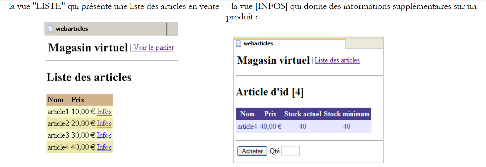 |
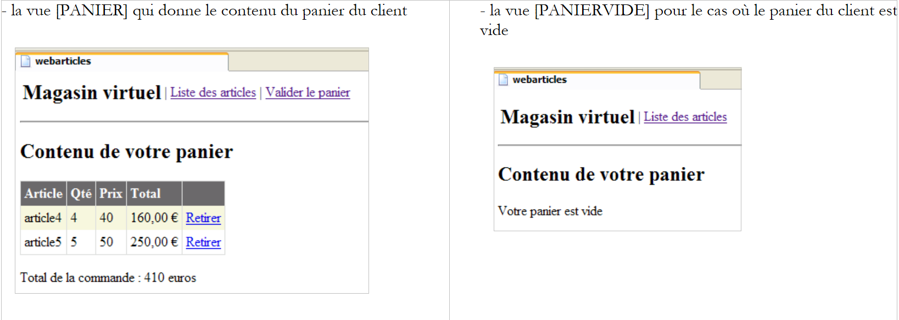 |
- die Ansicht [ERRORS], die alle Anwendungsfehler anzeigt
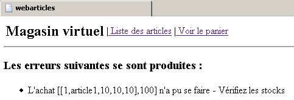
2.2.2. Allgemeine Anwendungsarchitektur
Die in Teil 1 erstellte Anwendung verfügt über eine dreischichtige Architektur:
 |
- Die drei Schichten wurden durch die Verwendung von Schnittstellen voneinander unabhängig gemacht
- Die Integration der verschiedenen Schichten wurde mit Spring implementiert
- Jede Schicht hat ihren eigenen Namensraum: web (UI-Schicht), domain (Geschäftsschicht) und dao (Datenzugriffsschicht).
Die Anwendung folgt einer MVC-Architektur (Model-View-Controller). Wenn wir uns das obige Schichtenmodell noch einmal ansehen, fügt sich die MVC-Architektur wie folgt ein:
 |
Die Verarbeitung einer Client-Anfrage erfolgt in folgenden Schritten:
- Der Client sendet eine Anfrage an den Controller. Dieser Controller ist in diesem Fall eine .aspx-Seite, die eine bestimmte Rolle spielt. Sie verarbeitet alle Client-Anfragen. Sie ist der Einstiegspunkt der Anwendung. Sie ist das C in MVC.
- Der Controller verarbeitet diese Anfrage. Dazu benötigt er möglicherweise Unterstützung durch die Geschäftslogik, die als „M“ in der MVC-Struktur bezeichnet wird.
- Der Controller erhält eine Antwort von der Geschäftsschicht. Die Anfrage des Clients wurde verarbeitet. Dies kann verschiedene mögliche Antworten auslösen. Ein klassisches Beispiel ist
- eine Fehlerseite, wenn die Anfrage nicht korrekt verarbeitet werden konnte
- ansonsten eine Bestätigungsseite
- Der Controller wählt die Antwort (= Ansicht) aus, die an den Client gesendet werden soll. Meistens handelt es sich dabei um eine Seite mit dynamischen Elementen. Der Controller stellt diese der Ansicht zur Verfügung.
- Die Ansicht wird an den Client gesendet. Dies ist das V in MVC.
2.2.3. Das Modell
Das M in MVC besteht aus den folgenden Elementen:
- Geschäftsklassen
- Datenzugriffsklassen
- die Datenbank
2.2.3.1. Die Datenbank
Die Datenbank enthält nur eine Tabelle namens ARTICLES, die mit den folgenden SQL-Befehlen erstellt wurde:
CREATE TABLE ARTICLES (
ID INTEGER NOT NULL,
NOM VARCHAR(20) NOT NULL,
PRIX NUMERIC(15,2) NOT NULL,
STOCKACTUEL INTEGER NOT NULL,
STOCKMINIMUM INTEGER NOT NULL
);
/* constraints */
ALTER TABLE ARTICLES ADD CONSTRAINT CHK_ID check (ID>0);
ALTER TABLE ARTICLES ADD CONSTRAINT CHK_PRIX check (PRIX>=0);
ALTER TABLE ARTICLES ADD CONSTRAINT CHK_STOCKACTUEL check (STOCKACTUEL>=0);
ALTER TABLE ARTICLES ADD CONSTRAINT CHK_STOCKMINIMUM check (STOCKMINIMUM>=0);
ALTER TABLE ARTICLES ADD CONSTRAINT CHK_NOM check (NOM<>'');
ALTER TABLE ARTICLES ADD CONSTRAINT UNQ_NOM UNIQUE (NOM);
/* primary key */
ALTER TABLE ARTICLES ADD CONSTRAINT PK_ARTICLES PRIMARY KEY (ID);
Primärschlüssel, der einen Artikel eindeutig identifiziert | |
Elementname | |
sein Preis | |
aktueller Lagerbestand | |
der Lagerbestand, unterhalb dessen eine Nachbestellung aufgegeben werden muss |
2.2.3.2. Die Namespaces des Modells
Modell M wird in Form von zwei Namensräumen bereitgestellt:
- istia.st.articles.dao: enthält die Datenzugriffsklassen der [dao]-Schicht
- istia.st.articles.domain: enthält die Business-Klassen der [domain]-Schicht
Jeder dieser Namespaces ist in einer eigenen „Assembly“-Datei enthalten:
assembly | Inhalt | role |
webarticles-dao | - [IArticlesDao]: die Schnittstelle für den Zugriff auf die [dao]-Schicht. Dies ist die einzige Schnittstelle, die für die [domain]-Schicht sichtbar ist. Sie sieht keine anderen. - [Article]: Klasse, die einen Artikel definiert - [ArticlesDaoArrayList]: Implementierungsklasse der Schnittstelle [IArticlesDao] unter Verwendung einer [ArrayList]-Klasse | Datenzugriffsebene – befindet sich vollständig innerhalb der [dao]-Schicht der 3-Schichten-Architektur der Webanwendung |
webarticles-domain | - [IArticlesDomain]: Die Schnittstelle für den Zugriff auf die [domain]-Schicht. Sie ist die einzige Schnittstelle, die für die Webschicht sichtbar ist. Sie sieht keine anderen. - [ArticlePurchases]: eine Klasse, die [IArticlesDomain] implementiert - [Purchase]: eine Klasse, die den Kauf eines Kunden repräsentiert - [Cart]: eine Klasse, die die Gesamteinkäufe eines Kunden repräsentiert | stellt das Web-Kaufmodell dar – befindet sich vollständig in der [domain]-Schicht der 3-Schichten-Architektur der Webanwendung |
2.2.4. Bereitstellung und Testen der [webarticles]-Anwendung
2.2.4.1. Bereitstellung
Wir stellen die in Teil 1 dieses Artikels entwickelte Anwendung in einem Ordner namens [runtime] bereit:
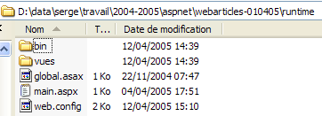 |  |
 |
Anmerkungen:
Der Ordner [runtime] enthält drei Dateien und zwei Unterordner:
- die Controller [global.asax] und [main.aspx]
- die Konfigurationsdatei [web.config]
- den Ordner [bin], der Folgendes enthält:
- die DLLs für die drei Schichten [webarticles-dao.dll], [webarticles-domain.dll], [webarticles-web.dll]
- die von Spring benötigten Dateien [Spring-Core.*], [log4net.dll]
- den Ordner [views], der den Präsentationscode für die verschiedenen Ansichten enthält.
- Das Vorhandensein von .vb-Code-Dateien ist nicht erforderlich, da sich deren kompilierte Versionen in den DLLs befinden.
2.2.4.2. Tests
Wir konfigurieren den [Cassini]-Webserver wie folgt:

mit:
Physikalischer Pfad: D:\data\serge\work\2004-2005\aspnet\webarticles-010405\runtime\
Virtueller Pfad: /webarticles
Über einen Browser rufen wir die URL [http://localhost/webarticles/main.aspx] auf
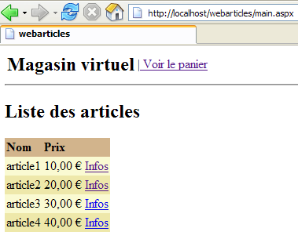
Zur Erinnerung: Die [dao]-Schicht wird durch eine Klasse implementiert, die die Artikel in einem [ArrayList]-Objekt speichert. Diese Klasse erstellt eine anfängliche Liste mit vier Artikeln. Ausgehend von der obigen Ansicht führen wir über die Menü-Links verschiedene Operationen durch. Hier sind einige davon. Die linke Spalte stellt die Anfrage des Clients dar, die rechte Spalte die an den Client gesendete Antwort.
 |  |
 |  |
 |  |
 |  |
 |  |
 |  |
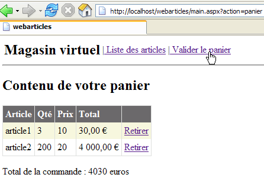 |  |
 |  |
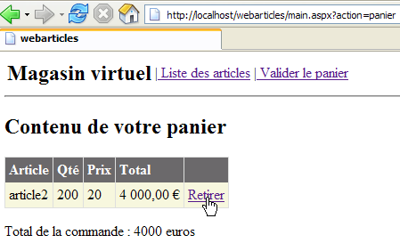 |  |
 |  |
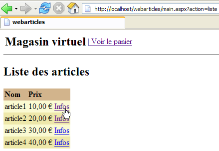 |  |
 |  |
2.2.5. Die [DAO]-Schicht noch einmal betrachtet
In unserer ersten Implementierung der [dao]-Schicht wurde die Datenzugriffsschnittstelle [IArticlesDao] durch eine Klasse implementiert, die die Elemente in einem [ArrayList]-Objekt speicherte. Dadurch konnten wir eine übermäßige Komplexität dieser Schicht vermeiden und zeigen, dass nur ihre Schnittstelle von Bedeutung war, nicht ihre Implementierung. So konnten wir eine funktionierende Webanwendung erstellen. Diese Anwendung besteht aus drei Schichten: [web], [domain] und [dao]. Hier werden wir verschiedene Implementierungen der [dao]-Schicht vorschlagen. Jede davon kann die aktuelle [dao]-Schicht ersetzen, ohne dass Änderungen an den Schichten [domain] und [web] erforderlich sind. Diese Flexibilität wird erreicht, weil:
- die [domain]-Schicht nicht auf eine konkrete Klasse, sondern auf eine Schnittstelle [IArticlesDao] verweist
- dank Spring konnten wir den Namen der Klasse, die die Schnittstelle [IArticlesDao] implementiert, vor der [domain]-Schicht verbergen.
2.2.5.1. Elemente der [dao]-Schicht
Sehen wir uns einige der Elemente der [dao]-Schicht an, die in den neuen Implementierungen beibehalten werden:
- - [IArticlesDao]: die Schnittstelle für den Zugriff auf die [dao]-Schicht
- - [Article]: die Klasse, die einen Artikel definiert
2.2.5.2. Die Klasse [Article]
Die Klasse, die einen Artikel definiert, sieht wie folgt aus:
Imports System
Namespace istia.st.articles.dao
Public Class Article
' private fields
Private _id As Integer
Private _nom As String
Private _prix As Double
Private _stockactuel As Integer
Private _stockminimum As Integer
' id article
Public Property id() As Integer
Get
Return _id
End Get
Set(ByVal Value As Integer)
If Value <= 0 Then
Throw New Exception("Le champ id [" + Value.ToString + "] est invalide")
End If
Me._id = Value
End Set
End Property
' item name
Public Property nom() As String
Get
Return _nom
End Get
Set(ByVal Value As String)
If Value Is Nothing OrElse Value.Trim.Equals("") Then
Throw New Exception("Le champ nom [" + Value + "] est invalide")
End If
Me._nom = Value
End Set
End Property
' item price
Public Property prix() As Double
Get
Return _prix
End Get
Set(ByVal Value As Double)
If Value < 0 Then
Throw New Exception("Le champ prix [" + Value.ToString + "] est invalide")
End If
Me._prix = Value
End Set
End Property
' current stock item
Public Property stockactuel() As Integer
Get
Return _stockactuel
End Get
Set(ByVal Value As Integer)
If Value < 0 Then
Throw New Exception("Le champ stockActuel [" + Value.ToString + "] est invalide")
End If
Me._stockactuel = Value
End Set
End Property
' minimum stock item
Public Property stockminimum() As Integer
Get
Return _stockminimum
End Get
Set(ByVal Value As Integer)
If Value < 0 Then
Throw New Exception("Le champ stockMinimum [" + Value.ToString + "] est invalide")
End If
Me._stockminimum = Value
End Set
End Property
' default builder
Public Sub New()
End Sub
' builder with properties
Public Sub New(ByVal id As Integer, ByVal nom As String, ByVal prix As Double, ByVal stockactuel As Integer, ByVal stockminimum As Integer)
Me.id = id
Me.nom = nom
Me.prix = prix
Me.stockactuel = stockactuel
Me.stockminimum = stockminimum
End Sub
' article identification method
Public Overrides Function ToString() As String
Return "[" + id.ToString + "," + nom + "," + prix.ToString + "," + stockactuel.ToString + "," + stockminimum.ToString + "]"
End Function
End Class
End Namespace
Diese Klasse bietet:
- einen Konstruktor zum Festlegen der 5 Informationen für einen Artikel: [id, name, price, currentStock, minimumStock]
- öffentliche Eigenschaften zum Lesen und Schreiben der 5 Informationen
- eine Validierung der für den Artikel eingegebenen Daten. Sind die Daten ungültig, wird eine Ausnahme ausgelöst.
- eine toString-Methode, die den Wert eines Artikels als Zeichenkette zurückgibt. Dies ist oft nützlich für die Fehlersuche in einer Anwendung.
2.2.5.3. Die Schnittstelle [IArticlesDao]
Die Schnittstelle [IArticlesDao] ist wie folgt definiert:
Imports System
Imports System.Collections
Namespace istia.st.articles.dao
Public Interface IArticlesDao
' list of all items
Function getAllArticles() As IList
' add an article
Function ajouteArticle(ByVal unArticle As Article) As Integer
' deletes an article
Function supprimeArticle(ByVal idArticle As Integer) As Integer
' modify an article
Function modifieArticle(ByVal unArticle As Article) As Integer
' search for an article
Function getArticleById(ByVal idArticle As Integer) As Article
' deletes all articles
Sub clearAllArticles()
' changes the stock of an item
Function changerStockArticle(ByVal idArticle As Integer, ByVal mouvement As Integer) As Integer
End Interface
End Namespace
Die verschiedenen Methoden der Schnittstelle haben folgende Funktionen:
gibt alle Artikel aus der Datenquelle zurück | |
löscht die Datenquelle | |
gibt das durch seine Nummer identifizierte [Article]-Objekt zurück | |
ermöglicht es Ihnen, einen Artikel zur Datenquelle hinzuzufügen | |
ermöglicht es Ihnen, einen Artikel in der Datenquelle zu ändern | |
ermöglicht es Ihnen, einen Eintrag aus der Datenquelle zu löschen | |
ermöglicht es Ihnen, den Lagerbestand eines Artikels in der Datenquelle zu ändern |
Die Schnittstelle stellt Client-Programmen eine Reihe von Methoden zur Verfügung, die ausschließlich durch ihre Signaturen definiert sind. Sie befasst sich nicht damit, wie diese Methoden tatsächlich implementiert werden. Dies sorgt für Flexibilität in einer Anwendung. Das Client-Programm ruft eine Schnittstelle auf, anstatt eine bestimmte Implementierung davon.
 |
Die Auswahl einer bestimmten Implementierung erfolgt über eine Spring-Konfigurationsdatei.
2.3. Die Implementierungsklasse [ArticlesDaoPlainODBC]
Wir schlagen eine neue Implementierung der [dao]-Schicht vor, die davon ausgeht, dass sich die Daten in einer ODBC-Quelle befinden. Wir wissen, dass unter Windows praktisch alle auf dem Markt erhältlichen DBMS über einen ODBC-Treiber verfügen. Der Vorteil dieser Lösung besteht darin, dass Sie das DBMS für die Anwendung transparent wechseln können. Der Nachteil ist, dass ein ODBC-Treiber, der nur Funktionen nutzt, die allen DBMS gemeinsam sind, im Allgemeinen weniger effizient ist als ein Treiber, der speziell geschrieben wurde, um das volle Potenzial eines bestimmten DBMS auszuschöpfen. Ein Beispiel für die Erstellung einer ODBC-Quelle finden Sie in Abschnitt 3.7.
2.3.1. Der Code
2.3.1.1. Das Grundgerüst
Die Klasse [ArticlesDaoPlainODBC] implementiert die Schnittstelle [IArticlesDao] wie folgt:
Kommentare:
- Zeile 3: Importiert den Namespace, der die .NET-Klassen für den Zugriff auf ODBC-Quellen enthält
- Zeile 11 – speichert die Verbindung zur ODBC-Quelle
- Zeile 12 – speichert den DSN-Namen der Datenquelle
- Zeilen 13–19: private Variablen vom Typ [OdbcCommand], die die von den verschiedenen Methoden der Klasse verwendeten SQL-Abfragen definieren
- Zeilen 22–27: der Konstruktor. Er empfängt die Elemente, die zum Erstellen des [OdbcConnection]-Objekts benötigt werden, das den Code mit der ODBC-Datenquelle verbindet
- Zeilen 29–31 – die Methode zum Hinzufügen eines Artikels
- Zeilen 33–35 – die Methode zum Ändern des Bestands eines Artikels
- Zeilen 37–39 – die Methode, die alle Artikel aus der ODBC-Datenquelle löscht
- Zeilen 41–43 – die Methode, die die Liste aller Artikel aus der ODBC-Quelle abruft
- Zeilen 45–47 – die Methode, die einen bestimmten Artikel abruft
- Zeilen 49–51 – die Methode, mit der Sie bestimmte Felder eines Artikels ändern können, dessen Nummer Ihnen bekannt ist
- Zeilen 53–55 – die Methode, mit der Sie einen Artikel anhand seiner Nummer löschen können
- Zeilen 57–60 – Hilfsmethode, um einen [SELECT]-Befehl auf die Datenquelle anzuwenden und das Ergebnis zurückzugeben
- Zeilen 62–64 – Hilfsmethode zum Ausführen eines [INSERT, UPDATE, DELETE] auf der Datenquelle und Zurückgeben des Ergebnisses
2.3.1.2. Der
Kommentare:
- Zeile 2 – Der Konstruktor erhält die drei Informationen, die er benötigt, um eine Verbindung zu einer ODBC-Quelle herzustellen: den DSN-Namen der Quelle, den Benutzernamen für die Verbindung und das zugehörige Passwort.
- Zeile 8 – Der DSN-Name der Quelle wird gespeichert, damit er in Fehlermeldungen einbezogen werden kann.
- Zeile 9 – Das [OdbcConnection]-Objekt wird instanziiert. Eine instanziierte Verbindung ist keine offene Verbindung. Die [open]-Methode wird verwendet, um die Verbindung zu öffnen.
- Zeilen 12–19 – Wir bereiten die SQL-Abfragen in [OdbcCommand]-Objekten vor. Dadurch müssen wir sie nicht jedes Mal neu erstellen, wenn wir sie benötigen. Die formalen Parameter ? in den Abfragen werden bei der Ausführung der Abfrage durch tatsächliche Werte ersetzt.
2.3.1.3. Die Methode executeQuery
Kommentare:
- Die Methode [executeQuery] ist eine Hilfsmethode, die:
- eine Abfrage [SELECT id, name, price, currentStock, minimumStock from ARTICLES ...] auf der Datenquelle ausführt
- das Ergebnis als Liste von [Article]-Objekten zurückgibt
- Zeile 1 – Der einzige Parameter der Methode ist das [OdbcCommand]-Objekt, das die auszuführende [Select]-Abfrage enthält.
- Zeile 7 – Die Verbindung wird geöffnet. Sie wird in Zeile 29 geschlossen, unabhängig davon, ob ein Fehler aufgetreten ist oder nicht.
- Zeile 9 – Das [OdbcDataReader]-Objekt, das zur Verarbeitung des Ergebnisses der [Select]-Abfrage benötigt wird, wird instanziiert
- Zeilen 13–23 – Jede aus der [Select]-Abfrage resultierende Zeile wird in ein [Article]-Objekt abgelegt, das dann zu den anderen Artikeln in einer [ArrayList] hinzugefügt wird
- Die Liste der Elemente wird in Zeile 25 zurückgegeben
- Es werden keine Ausnahmen behandelt. Diese müssen vom Code behandelt werden, der diese Methode aufruft.
2.3.1.4. Die Methode „executeUpdate“
Anmerkungen:
- Die Methode erhält ein [OdbcCommand]-Objekt, das eine SQL-Abfrage vom Typ [Insert, Update, Delete] enthält.
- Die Verbindung wird in Zeile 5 geöffnet. Sie wird in Zeile 10 geschlossen, unabhängig davon, ob eine Ausnahme aufgetreten ist oder nicht.
- Die Update-Abfrage wird in Zeile 7 ausgeführt. Das Ergebnis – die Anzahl der durch die Abfrage geänderten Zeilen in der Tabelle ARTICLES – wird sofort zurückgegeben.
2.3.1.5. Die Methode addArticle
Kommentare:
- Zeile 1 – Die Methode empfängt das Element, das zur ODBC-Datenquelle hinzugefügt werden soll. Sie gibt die Anzahl der von dieser Operation betroffenen Zeilen zurück, d. h. 1 oder 0
- Zeilen 3 und 20 – Die Methode ist synchronisiert. Dies gilt für alle Datenzugriffsmethoden. Das bedeutet, dass jeweils nur ein Thread an der Datenquelle arbeiten kann. Dies ist wahrscheinlich zu konservativ. Es gibt bessere Alternativen, insbesondere die Einbindung dieser Operationen in Transaktionen. In diesem Fall verwaltet das DBMS den parallelen Zugriff. Wir wollten das Konzept der Transaktionen zu diesem Zeitpunkt noch nicht einführen. Spring bietet uns die Möglichkeit, sie in der [Domain]-Schicht einzuführen. Vielleicht haben wir Gelegenheit, darauf in einem anderen Artikel zurückzukommen.
- In den Zeilen 5–12 werden den formalen Parametern der Abfrage für das vom Konstruktor initialisierte [insertCommand]-Objekt Werte zugewiesen. Hier noch einmal die Abfrage:
insertCommand = New OdbcCommand("insert into ARTICLES(id, nom, prix, stockactuel, stockminimum) values (?,?,?,?,?)", connexion)
Die 5 für die Abfrage erforderlichen Werte werden in den Zeilen 7–11 bereitgestellt.
- Zeilen 13–19: Die Abfrage wird ausgeführt. Bei Erfolg wird das Ergebnis zurückgegeben. Andernfalls wird eine generische Ausnahme mit einer expliziten Fehlermeldung ausgelöst
2.3.1.6. Die Methode modifieArticle
Kommentare:
- Zeile 1 – Die Methode erhält das zu ändernde Element aus der ODBC-Datenquelle. Sie gibt die Anzahl der von dieser Operation betroffenen Zeilen zurück, d. h. 1 oder 0
- Die Kommentare aus der Methode [addItem] können hier eingefügt werden
2.3.1.7. Die Methode deleteArticle
Kommentare:
- Zeile 1 – Die Methode erhält die ID des zu löschenden Elements aus der ODBC-Datenquelle. Sie gibt die Anzahl der von dieser Operation betroffenen Zeilen zurück, d. h. 1 oder 0
- Die Kommentare zur Methode [addItem] können hier eingefügt werden
2.3.1.8. Die Methode getAllArticles
Kommentare:
- Zeile 1 – Die Methode nimmt keine Parameter entgegen. Sie gibt eine Liste aller Elemente aus der ODBC-Datenquelle zurück
- Die [Select]-Abfrage, die alle Datensätze abruft, wird an die Methode [executeQuery] übergeben – Zeile 6
- Die resultierende Liste wird in Zeile 8 zurückgegeben
- Die Zeilen 9–12 behandeln etwaige Ausnahmen
2.3.1.9. Die Methode getArticleById
Kommentare:
- Zeile 1 – Die Methode erhält die ID des gewünschten Elements als Parameter. Sie gibt das Element zurück, wenn es in der ODBC-Quelle gefunden wird; andernfalls gibt sie die Referenz [nothing] zurück.
- Die [Select]-Abfrage, die das Element anfordert, wird in den Zeilen 5–8 initialisiert
- sie wird ausgeführt Zeile 12 – eine Liste von Elementen wird abgerufen
- Wenn diese Liste leer ist, wird in Zeile 14 die Referenz [nothing] zurückgegeben
- Andernfalls wird in Zeile 16 das einzige Element in der Liste ausgegeben
- Die Zeilen 17–20 behandeln etwaige Ausnahmen
2.3.1.10. Die Methode clearAllArticles
Kommentare:
- Zeile 1 – Die Methode nimmt keine Parameter entgegen und gibt nichts zurück
- Zeile 6 – Die Abfrage zum Löschen aller Elemente wird ausgeführt
- Zeilen 7–10: Behandlung etwaiger Ausnahmen
2.3.1.11. Die Methode „changerStockArticle“
Kommentare:
- Zeile 1 – Die Methode erhält als Parameter die Artikelnummer, für die der Lagerbestand geändert werden soll, sowie die Bestandserhöhung (positiv oder negativ). Sie gibt die Anzahl der durch den Vorgang geänderten Zeilen zurück, d. h. 0 oder 1.
- Zeilen 5–10: Die Abfrage [updateStockCommand] wird initialisiert. Hier ist der Text der SQL-Abfrage:
updateStockCommand = New OdbcCommand("update ARTICLES set stockactuel=stockactuel+? where id=? and (stockactuel+?)>=0", connexion)
Beachten Sie, dass der Lagerbestand nur geändert wird, wenn er nach der Änderung >=0 bleibt.
- Die Abfrage zur Aktualisierung des Lagerbestands des Artikels wird in Zeile 13 ausgeführt, und das Ergebnis wird
- in den Zeilen 14–18, wo wir eventuelle Ausnahmen behandeln
2.3.2. Erstellen der [DAO]-Layer-Assembly
Das Visual Studio-Projekt für diese neue Version der [DAO]-Schicht hat folgende Struktur:

Das Projekt ist so konfiguriert, dass eine DLL mit dem Namen [webarticles-dao.dll] erstellt wird:
 |  |
2.3.3. NUnit-Tests für die [dao]-Schicht
2.3.3.1. Erstellen einer ODBC-Firebird-Datenquelle in „ “
Um unsere neue [DAO]-Schicht zu testen, benötigen wir eine ODBC-Datenquelle und somit eine Datenbank. Wir verwenden das Firebird-DBMS (Abschnitt 3.5). Mit IBExpert (Abschnitt 3.6) erstellen wir die folgende Artikeldatenbank:
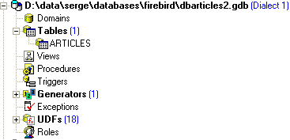 |  |
Der Administrator dieser Datenbank ist der Benutzer [SYSDBA] mit dem Passwort [masterkey]. Wir erstellen einige Datensätze:

Wir erstellen nun die folgende Firebird-ODBC-Quelle (siehe Abschnitt 3.7):
 |
Die erstellte ODBC-Quelle weist folgende Merkmale auf:
- DSN-Name: odbc-firebird-articles
- Verbindungs-ID: SYSDBA
- zugehöriges Passwort: masterkey
2.3.3.2. Die NUnit-Testklasse für die [dao]-Schicht
Wir haben bereits eine Testklasse für die ursprünglich erstellte [dao]-Schicht geschrieben. Wie sich der Leser vielleicht erinnert, testete diese Klasse keine bestimmte Klasse, sondern die [IArticlesDao]-Schnittstelle:
Imports System
Imports System.Collections
Imports NUnit.Framework
Imports istia.st.articles.dao
Imports System.Threading
Imports Spring.Objects.Factory.Xml
Imports System.IO
Namespace istia.st.articles.tests
<TestFixture()> _
Public Class NunitTestArticlesArrayList
' the test object
Private articlesDao As IArticlesDao
<SetUp()> _
Public Sub init()
' retrieve an instance of the Spring object manufacturer
Dim factory As XmlObjectFactory = New XmlObjectFactory(New FileStream("spring-config.xml", FileMode.Open))
' request instantiation of articlesdao object
articlesDao = CType(factory.GetObject("articlesdao"), IArticlesDao)
End Sub
....
Wir sehen, dass wir in der Methode <Setup()> Spring um eine Referenz auf das Singleton namens [articlesdao] vom Typ [IArticlesDao] bitten, d. h. vom Typ der Schnittstelle. Das Singleton [articlesdao] wurde durch die folgende Konfigurationsdatei [spring-config.xml] definiert:
<?xml version="1.0" encoding="iso-8859-1" ?>
<!DOCTYPE objects PUBLIC "-//SPRING//DTD OBJECT//EN"
"http://www.springframework.net/dtd/spring-objects.dtd">
<objects>
<object id="articlesdao" type="istia.st.articles.dao.ArticlesDaoArrayList, webarticles-dao"/>
</objects>
Lassen Sie uns zeigen, dass die ursprüngliche Testklasse es uns ermöglicht, unsere neue [dao]-Schicht ohne Änderungen oder Neukompilierung zu testen.
- Erstellen Sie im Visual Studio-Ordner für unsere neue [dao]-Schicht den Ordner [tests] (siehe unten rechts), indem Sie den Ordner [bin] aus dem Testprojekt der ursprünglichen [dao]-Schicht (siehe unten links) kopieren. Bei Bedarf kann der Leser das Testprojekt für die erste Version der [dao]-Schicht im ersten Teil des Artikels nachlesen.
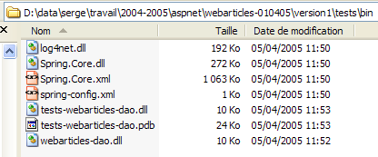 |  |
- Ersetzen Sie im Ordner [tests] die DLL-Datei [webarticles-dao.dll] aus der alten [dao]-Ebene durch die DLL-Datei [webarticles-dao.dll] aus der neuen [dao]-Ebene
- Ändern Sie die Konfigurationsdatei [spring-config.xml], um die neue Klasse [ArticlesDaoPlainODBC] zu instanziieren:
Kommentare:
- Zeile 6: Das Objekt [articlesdao] ist nun mit einer Instanz der Klasse [ArticlesDaoPlainODBC] verknüpft
- Diese Klasse verfügt über einen Konstruktor mit drei Argumenten:
- den DSN-Quellennamen – Zeile 8
- die Identität, die für den Zugriff auf die Datenbank verwendet wird – Zeile 11
- das dieser Identität zugeordnete Passwort – Zeile 14
Hier verwenden wir die Informationen aus der zuvor erstellten ODBC-Firebird-Quelle.
2.3.3.3. Testen
Wir sind nun bereit, die Tests auszuführen. Mit der Anwendung [Nunit-Gui] laden wir die DLL [test-webarticles-dao.dll] aus dem oben genannten Ordner [tests] und führen den Test [testGetAllArticles] aus:

Wenn wir uns den Screenshot oben ansehen, könnten wir den Namen [NUnitTestArticlesDaoArrayList] bereuen, den wir der Testklasse ursprünglich gegeben haben. Er ist verwirrend. Tatsächlich ist es die Klasse [ArticlesDaoPlainODBC], die hier getestet wird. Der Screenshot zeigt, dass wir die Artikel, die wir in die Tabelle [ARTICLES] eingefügt haben, korrekt abgerufen haben. Führen wir nun alle Tests aus:

Im linken Fenster sehen wir die Liste der getesteten Methoden. Die Farbe des Punktes vor dem Namen jeder Methode zeigt an, ob die Methode bestanden (grün) oder nicht bestanden (rot) hat. Leser, die dieses Dokument auf dem Bildschirm betrachten, werden sehen, dass alle Tests erfolgreich waren.
2.3.3.4. Fazit
Wir haben soeben gezeigt, dass:
- da die NUnit-Testklasse nicht auf eine Klasse, sondern auf eine Schnittstelle verwies;
- da der genaue Name der Klasse, die die Schnittstelle instanziiert, in einer Konfigurationsdatei und nicht im Code angegeben wurde;
- weil Spring die Instanziierung der Klasse und die Bereitstellung einer Referenz darauf im Testcode übernommen hat;
daher blieb der für die ursprüngliche [dao]-Schicht geschriebene Testcode für eine neue Implementierung derselben Schicht gültig. Wir benötigten keinen Zugriff auf den Code der Testklasse. Wir verwendeten nur deren kompilierte Version, die während des Testens der ursprünglichen [dao]-Schicht generiert wurde. Wir werden ähnliche Schlussfolgerungen ziehen, wenn es an der Zeit ist, die neue [dao]-Schicht in die [webarticles]-Anwendung zu integrieren.
2.3.4. Integration der neuen [dao]-Schicht in die [webarticles]-Anwendung
2.3.4.1. Integrationstests
Erinnern Sie sich daran, dass die ursprüngliche Version der [webarticles]-Anwendung im folgenden [runtime]-Ordner bereitgestellt wurde:
| |
|
Leser werden gebeten, Abschnitt 2.2.4 zu lesen, in dem die Bereitstellungsverfahren für die Anwendung [webarticles] detailliert beschrieben werden. Wir nehmen die folgenden Änderungen am Inhalt des Ordners [runtime] vor:
- Im Ordner [bin] wird die DLL für die alte [dao]-Schicht durch die DLL für die neue [dao]-Schicht ersetzt
- In [runtime] wird die Konfigurationsdatei [web.config] durch eine Datei ersetzt, die die neue Implementierungsklasse der [dao]-Schicht berücksichtigt:
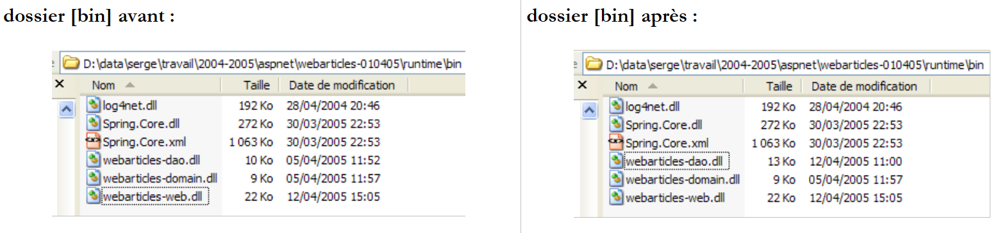 |
 |
Die neue [web.config]-Konfigurationsdatei sieht wie folgt aus:
Kommentare:
- Die Zeilen 14–24 verknüpfen das Singleton [articlesDao] mit einer Instanz der neuen Klasse [ArticlesDaoPlainODBC]. Dies ist die einzige Änderung. Wir sind bereits beim Testen der neuen [dao]-Schicht darauf gestoßen.
Wir sind bereit für den Test. Wir konfigurieren den [Cassini]-Webserver genauso wie in Abschnitt 2.2.4. Wir initialisieren die [Firebird]-Produkttabelle mit den folgenden Werten:
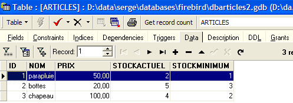
Stellen Sie sicher, dass der Cassini-Webserver und das [Firebird]-DBMS laufen. Über einen Browser rufen wir die URL [http://localhost/webarticles/main.aspx] auf:

 |
Sehen wir uns nun den Inhalt der Tabelle [ARTICLES] in der [Firebird]-Datenbank an:

Die Artikel [Regenschirm] und [Stiefel] wurden gekauft, und ihre Lagerbestände wurden um die gekaufte Menge reduziert. Der Artikel [Hut] konnte nicht gekauft werden, da die angeforderte Menge den Lagerbestand überstieg. Wir laden den Leser ein, weitere Tests durchzuführen.
2.3.4.2. Fazit
Was haben wir getan?
- Wir haben auf die Bereitstellungsversion der vorherigen Version zurückgesetzt;
- wir haben die DLL der [dao]-Schicht durch eine neue Version ersetzt. Die DLLs der [web]- und [domain]-Schicht blieben unverändert;
- wir haben die Konfigurationsdatei [web.config] so angepasst, dass sie die neue Implementierungsklasse der [dao]-Schicht berücksichtigt
All dies ist übersichtlich und erleichtert die Weiterentwicklung der Webanwendung erheblich. Diese wichtigen Funktionen werden durch zwei architektonische Entscheidungen ermöglicht:
- Zugriff auf die Schichten über Schnittstellen
- Integration und Konfiguration der Schichten durch Spring.
Wir schlagen nun eine neue Implementierung der [dao]-Schicht vor.
2.4. Die Implementierungsklasse [ArticlesDaoSqlServer]
Die zweite Implementierung der [dao]-Schicht geht davon aus, dass sich die Daten in einer SQL Server-Datenbank befinden. Microsoft stellt ein DBMS namens MSDE zur Verfügung, bei dem es sich um eine eingeschränkte Version von SQL Server handelt. Anweisungen zum Beziehen und Installieren finden Sie im Anhang, Abschnitt 3.12.
2.4.1. Der Code
Die Klasse [ArticlesDaoSqlServer] ist der zuvor besprochenen Klasse [ArticlesDaoPlainODBC] sehr ähnlich. Daher werden wir nur die Änderungen gegenüber der vorherigen Version hervorheben:
- Die erforderlichen Klassen befinden sich im Namespace [System.Data.SqlClient] statt im Namespace [System.Data.Odbc]
- Die Verbindung [OdbcConnection] ist nun vom Typ [SqlConnection]
- [OdbcCommand]-Objekte sind nun vom Typ [SqlCommand]
- Die Syntax parametrisierter SQL-Abfragen hat sich geändert. Die INSERT-Abfrage sieht nun wie folgt aus:
insertCommand = New SqlCommand("insert into ARTICLES(id, nom, prix, stockactuel, stockminimum) values (@id,@nom,@prix,@sa,@sm)", connexion)
während sie zuvor wie folgt lautete:
insertCommand = New OdbcCommand("insert into ARTICLES(id, nom, prix, stockactuel, stockminimum) values (?,?,?,?,?)", connexion)
- Die Methode [addItem] sieht dann wie folgt aus:
Public Function ajouteArticle(ByVal unArticle As Article) As Integer Implements IArticlesDao.ajouteArticle
' exclusive section
SyncLock Me
' prepare the insertion request
With insertCommand.Parameters
.Clear()
.Add(New SqlParameter("@id", unArticle.id))
.Add(New SqlParameter("@nom", unArticle.nom))
.Add(New SqlParameter("@prix", unArticle.prix))
.Add(New SqlParameter("@sa", unArticle.stockactuel))
.Add(New SqlParameter("@sm", unArticle.stockminimum))
End With
Try
'it is executed
Return executeUpdate(insertCommand)
Catch ex As Exception
'query error
Throw New Exception(String.Format("Erreur à l'ajout de l'article [{0}] : {1}", unArticle.ToString, ex.Message))
End Try
End SyncLock
End Function
- Der Konstruktor wird ebenfalls geändert:
Public Sub New(ByVal serveur As String, ByVal databaseName As String, ByVal uid As String, ByVal password As String)
' server: instance name SQL server to reach
' databaseName: name of the database to be reached
' uid: user identity
' password: your password
'retrieve the name of the database passed as an argument
Me.databaseName = databaseName
'we instantiate the connection
Dim connectString As String = String.Format("Data Source={0};Initial Catalog={1};UID={2};PASSWORD={3}", serveur, databaseName, uid, password)
connexion = New SqlConnection(connectString)
' prepare SQL requests
insertCommand = New SqlCommand("insert into ARTICLES(id, nom, prix, stockactuel, stockminimum) values (@id,@nom,@prix,@sa,@sm)", connexion)
...
End Sub
Der Konstruktor akzeptiert nun vier Parameter:
' server: instance name SQL server to reach
' databaseName: name of the database to be reached
' uid: user identity
' password: your password
Der vollständige Code für die Klasse [ArticlesDaoSqlServer] lautet wie folgt:
Imports System
Imports System.Collections
Imports System.Data.SqlClient
Namespace istia.st.articles.dao
Public Class ArticlesDaoSqlServer
Implements istia.st.articles.dao.IArticlesDao
' private fields
Private connexion As SqlConnection = Nothing
Private databaseName As String
Private insertCommand As SqlCommand
Private updatecommand As SqlCommand
Private deleteSomeCommand As SqlCommand
Private selectSomeCommand As SqlCommand
Private updateStockCommand As SqlCommand
Private deleteAllCommand As SqlCommand
Private selectAllCommand As SqlCommand
' manufacturer
Public Sub New(ByVal serveur As String, ByVal databaseName As String, ByVal uid As String, ByVal password As String)
' server: instance name SQL server to reach
' databaseName: name of the database to be reached
' uid: user identity
' password: your password
'retrieve the name of the database passed as an argument
Me.databaseName = databaseName
'we instantiate the connection
Dim connectString As String = String.Format("Data Source={0};Initial Catalog={1};UID={2};PASSWORD={3}", serveur, databaseName, uid, password)
connexion = New SqlConnection(connectString)
' prepare SQL requests
insertCommand = New SqlCommand("insert into ARTICLES(id, nom, prix, stockactuel, stockminimum) values (@id,@nom,@prix,@sa,@sm)", connexion)
updatecommand = New SqlCommand("update ARTICLES set nom=@nom, prix=@prix, stockactuel=@sa, stockminimum=@sm where id=@id", connexion)
deleteSomeCommand = New SqlCommand("delete from ARTICLES where id=@id", connexion)
selectSomeCommand = New SqlCommand("select id, nom, prix, stockactuel, stockminimum from ARTICLES where id=@id", connexion)
updateStockCommand = New SqlCommand("update ARTICLES set stockactuel=stockactuel+@mvt where id=@id and (stockactuel+@mvt)>=0", connexion)
selectAllCommand = New SqlCommand("select id, nom, prix, stockactuel, stockminimum from ARTICLES", connexion)
deleteAllCommand = New SqlCommand("delete from ARTICLES", connexion)
End Sub
Public Function ajouteArticle(ByVal unArticle As Article) As Integer Implements IArticlesDao.ajouteArticle
' exclusive section
SyncLock Me
' prepare the insertion request
With insertCommand.Parameters
.Clear()
.Add(New SqlParameter("@id", unArticle.id))
.Add(New SqlParameter("@nom", unArticle.nom))
.Add(New SqlParameter("@prix", unArticle.prix))
.Add(New SqlParameter("@sa", unArticle.stockactuel))
.Add(New SqlParameter("@sm", unArticle.stockminimum))
End With
Try
'it is executed
Return executeUpdate(insertCommand)
Catch ex As Exception
'query error
Throw New Exception(String.Format("Erreur à l'ajout de l'article [{0}] : {1}", unArticle.ToString, ex.Message))
End Try
End SyncLock
End Function
Public Function changerStockArticle(ByVal idArticle As Integer, ByVal mouvement As Integer) As Integer Implements IArticlesDao.changerStockArticle
' exclusive section
SyncLock Me
' prepare the stock update request
With updateStockCommand.Parameters
.Clear()
.Add(New SqlParameter("@mvt", mouvement))
.Add(New SqlParameter("@id", idArticle))
End With
'it is executed
Try
Return executeUpdate(updateStockCommand)
Catch ex As Exception
'query error
Throw New Exception(String.Format("Erreur lors du changement de stock [idArticle={0}, mouvement={1}] : [{2}]", idArticle, mouvement, ex.Message))
End Try
End SyncLock
End Function
Public Sub clearAllArticles() Implements IArticlesDao.clearAllArticles
' exclusive section
SyncLock Me
Try
'execute the insertion request
executeUpdate(deleteAllCommand)
Catch ex As Exception
'query error
Throw New Exception(String.Format("Erreur lors de la suppression des articles : {0}", ex.Message))
End Try
End SyncLock
End Sub
Public Function getAllArticles() As System.Collections.IList Implements IArticlesDao.getAllArticles
' exclusive section
SyncLock Me
Try
'execute the select query
Dim articles As IList = executeQuery(selectAllCommand)
'we return the list
Return articles
Catch ex As Exception
'query error
Throw New Exception(String.Format("Erreur lors de l'obtention des articles [select id,nom,prix,stockactuel,stockminimum from articles]: {0}", ex.Message))
End Try
End SyncLock
End Function
Public Function getArticleById(ByVal idArticle As Integer) As Article Implements IArticlesDao.getArticleById
' exclusive section
SyncLock Me
' prepare the select query
With selectSomeCommand.Parameters
.Clear()
.Add(New SqlParameter("@id", idArticle))
End With
'it is executed
Try
'execute the query
Dim articles As IList = executeQuery(selectSomeCommand)
'we test if we've found the article
If articles.Count = 0 Then Return Nothing
'we return the item
Return CType(articles.Item(0), Article)
Catch ex As Exception
'query error
Throw New Exception(String.Format("Erreur lors de la recherche de l'article [{0} : {1}", idArticle, ex.Message))
End Try
End SyncLock
End Function
Public Function modifieArticle(ByVal unArticle As Article) As Integer Implements IArticlesDao.modifieArticle
' exclusive section
SyncLock Me
' prepare the update request
With updatecommand.Parameters
.Clear()
.Add(New SqlParameter("@nom", unArticle.nom))
.Add(New SqlParameter("@prix", unArticle.prix))
.Add(New SqlParameter("@sa", unArticle.stockactuel))
.Add(New SqlParameter("@sm", unArticle.stockminimum))
.Add(New SqlParameter("@id", unArticle.id))
End With
' it is executed
Try
'execute the insertion request
Return executeUpdate(updatecommand)
Catch ex As Exception
'query error
Throw New Exception("Erreur lors de la modification de l'article [" + unArticle.ToString + "]", ex)
End Try
End SyncLock
End Function
Public Function supprimeArticle(ByVal idArticle As Integer) As Integer Implements IArticlesDao.supprimeArticle
' exclusive section
SyncLock Me
' prepare the delete request
With deleteSomeCommand.Parameters
.Clear()
.Add(New SqlParameter("@id", idArticle))
End With
'it is executed
Try
'execute the delete request
Return executeUpdate(deleteSomeCommand)
Catch ex As Exception
'query error
Throw New Exception(String.Format("Erreur lors de la suppression de l'article [id={0}] : {1}", idArticle, ex.Message))
End Try
End SyncLock
End Function
Private Function executeQuery(ByVal query As SqlCommand) As IList
' query execution SELECT
' declaration of the object providing access to all rows in the result table
Dim myReader As SqlDataReader = Nothing
Try
'create a connection to BDD
connexion.Open()
'execute the query
myReader = query.ExecuteReader()
'declare a list of items and return it later
Dim articles As IList = New ArrayList
Dim unArticle As Article
While myReader.Read()
'we prepare an article with the reader's values
unArticle = New Article
unArticle.id = myReader.GetInt32(0)
unArticle.nom = myReader.GetString(1)
unArticle.prix = myReader.GetDouble(2)
unArticle.stockactuel = myReader.GetInt32(3)
unArticle.stockminimum = myReader.GetInt32(4)
'add the item to the list
articles.Add(unArticle)
End While
'returns the result
Return articles
Finally
' freeing up resources
If Not myReader Is Nothing And Not myReader.IsClosed Then myReader.Close()
If Not connexion Is Nothing Then connexion.Close()
End Try
End Function
Private Function executeUpdate(ByVal updateCommand As SqlCommand) As Integer
' execute an update request
Try
'create a connection to BDD
connexion.Open()
'execute the query
Return updateCommand.ExecuteNonQuery()
Finally
' freeing up resources
If Not connexion Is Nothing Then connexion.Close()
End Try
End Function
End Class
End Namespace
Dem Leser wird empfohlen, diesen Code im Lichte der zuvor bereitgestellten Kommentare zur Klasse [ArticlesDaoPlainODBC] zu überprüfen.
2.4.2. Erstellen der [dao]-Layer-Assembly
Das neue Visual Studio-Projekt hat folgende Struktur:

Das Projekt ist so konfiguriert, dass eine DLL mit dem Namen [webarticles-dao.dll] generiert wird:
 |  |
2.4.3. NUnit-Tests für die [dao]-Schicht
2.4.3.1. Erstellen eines SQL Server-Datenquellen- s
Um unsere neue [dao]-Schicht zu testen, benötigen wir eine SQL Server-Datenquelle und somit das SQL Server-DBMS. Wir werden tatsächlich das MSDE-DBMS (Microsoft Data Engine) verwenden (Abschnitt 3.12), bei dem es sich um eine Version von SQL Server handelt, die lediglich durch die Anzahl der unterstützten gleichzeitigen Benutzer eingeschränkt ist. Mit Hilfe von [EMS MS SQL Manager] (Abschnitt 3.14) erstellen wir die folgende Produktdatenbank in einer MSDE-Instanz namens [portable1_tahe\msde140405]:
 |  |

Die Datenbank gehört dem Benutzer [mdparticles] mit dem Passwort [admarticles]. Der Transact-SQL-Befehl zum Erstellen der Tabelle [ARTICLES] lautet wie folgt:
CREATE TABLE [ARTICLES] (
[id] int NOT NULL,
[nom] varchar(20) COLLATE French_CI_AS NOT NULL,
[prix] float(53) NOT NULL,
[stockactuel] int NOT NULL,
[stockminimum] int NOT NULL,
CONSTRAINT [ARTICLES_uq] UNIQUE ([nom]),
PRIMARY KEY ([id]),
CONSTRAINT [ARTICLES_ck_id] CHECK ([id] > 0),
CONSTRAINT [ARTICLES_ck_nom] CHECK ([nom] <> ''),
CONSTRAINT [ARTICLES_ck_prix] CHECK ([prix] >= 0),
CONSTRAINT [ARTICLES_ck_stockactuel] CHECK ([stockactuel] >= 0),
CONSTRAINT [ARTICLES_ck_stockminimum] CHECK ([stockminimum] >= 0)
)
ON [PRIMARY]
GO
Wir erstellen einige Elemente:

2.4.3.2. Die NUnit-Testklasse
Die NUnit-Testklasse für die Implementierungsklasse [ArticlesDaoSqlServer] entspricht derjenigen für die Klasse [ArticlesDaoPlainODBC] (siehe Abschnitt 2.3.3.2). Wir verfolgen einen ähnlichen Ansatz, um den NUnit-Test für die Klasse vorzubereiten:
- Wir erstellen den Ordner [tests] (rechts) im Visual Studio-Ordner des Projekts [dao-sqlserver], indem wir den Ordner [tests] aus dem Projekt [dao-odbc] (links) kopieren:
 |  |
- Im Ordner [tests] des Projekts [dao-sqlserver] ersetzen wir die DLL [webarticles-dao.dll] durch die vom Projekt [dao-sqlserver] generierte DLL [webarticles-dao.dll]
- Wir ändern die Konfigurationsdatei [spring-config.xml], um die neue Klasse [ArticlesDaoSqlServer] zu instanziieren:
Kommentare:
- Zeile 7: Das Objekt [articlesdao] ist nun mit einer Instanz der Klasse [ArticlesDaoSqlServer] verknüpft
- Diese Klasse verfügt über einen Konstruktor mit vier Argumenten:
- den Namen der verwendeten MSDE-Instanz – Zeile 9
- den Namen der Datenbank – Zeile 12
- die für den Zugriff auf die Datenbank verwendete Identität – Zeile 15
- das dieser Identität zugeordnete Passwort – Zeile 18
Hier verwenden wir die Informationen aus der zuvor erstellten MSDE-Quelle.
2.4.3.3. Testen
Wir sind bereit, die Tests auszuführen. Mit der Anwendung [Nunit-Gui] laden wir die DLL [test-webarticles-dao.dll] aus dem oben genannten Ordner [tests] und führen den Test [testGetAllArticles] aus:

Obwohl die Testklasse ursprünglich den Namen [NUnitTestArticlesDaoArrayList] trug – ein Name, der beibehalten wurde, da wir die von dieser Klasse abgeleitete DLL [tests-webarticles-dao.dll] verwenden –, ist es tatsächlich die Klasse [ArticlesDaoSqlserver], die hier getestet wird. Der Screenshot zeigt, dass wir die Artikel, die wir in die Tabelle [ARTICLES] eingefügt haben, korrekt abgerufen haben. Führen wir nun alle Tests aus:

Im linken Fenster sehen wir die Liste der getesteten Methoden. Die Farbe des Punktes vor dem Namen jeder Methode zeigt an, ob die Methode bestanden (grün) oder nicht bestanden (rot) hat. Leser, die dieses Dokument auf dem Bildschirm betrachten, werden sehen, dass alle Tests erfolgreich waren.
2.4.4. Integration der neuen [dao]-Schicht in die [webarticles]-Anwendung
Wir folgen der in Abschnitt 2.3.4 beschriebenen Vorgehensweise. Wir nehmen folgende Änderungen am Inhalt des Ordners [runtime] vor:
- Im Ordner [bin] wird die DLL für die alte [dao]-Schicht durch die DLL für die neue [dao]-Schicht ersetzt, die von der Klasse [ArticlesDaoSqlServer] implementiert wird
- In [runtime] wird die Konfigurationsdatei [web.config] durch eine Datei ersetzt, die die neue Implementierungsklasse berücksichtigt:
Kommentare:
- Die Zeilen 15–33 verknüpfen das Singleton [articlesDao] mit einer Instanz der neuen Klasse [ArticlesDaoSqlServer]. Dies ist die einzige Änderung. Wir sind bereits beim Testen der neuen [dao]-Schicht darauf gestoßen
Wir sind bereit für den Test. Wir behalten die gleiche [Cassini]-Webserverkonfiguration wie zuvor bei. Wir initialisieren die [MSDE]-Produkttabelle mit den folgenden Werten:

Stellen Sie sicher, dass der Cassini-Webserver und das MSDE-DBMS (hier die Instanz portable1_tahe\msde140405) laufen. Über einen Browser rufen wir die URL [http://localhost/webarticles/main.aspx] auf:

 |
Sehen wir uns nun den Inhalt der Tabelle [ARTICLES] in der Datenbank [MSDE] an:

Die Artikel [Fußball] und [Tennisschläger] wurden gekauft, und ihre Lagerbestände wurden um die gekaufte Menge reduziert. Der Artikel [Rollschuhe] konnte nicht gekauft werden, da die angeforderte Menge den Lagerbestand überstieg. Wir laden den Leser ein, weitere Tests durchzuführen.
2.4.5. Die Implementierungsklasse [ArticlesDaoOleDb]
2.4.5.1. OleDb-Datenquellen-
Die dritte Implementierung der [dao]-Schicht geht davon aus, dass sich die Daten in einer Datenbank befinden, auf die über einen OleDb-Treiber zugegriffen werden kann. Das Prinzip hinter OleDb-Quellen ist analog zu dem von ODBC-Quellen. Ein Programm, das eine OleDb-Quelle verwendet, tut dies über eine Standardschnittstelle, die allen OleDb-Quellen gemeinsam ist. Das Ändern der OleDb-Quelle erfordert lediglich das Ändern des OleDb-Treibers. Der Code selbst bleibt unverändert.
Mit Visual Studio können Sie herausfinden, welche OleDb-Treiber auf Ihrem Rechner verfügbar sind:
- Rufen Sie den Server-Explorer auf, indem Sie [Ansicht/Server-Explorer] auswählen:
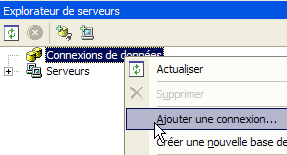
- Um eine neue Verbindung hinzuzufügen, klicken Sie mit der rechten Maustaste auf [Datenverbindung] und wählen Sie die Option [Verbindung hinzufügen]. Daraufhin öffnet sich ein Assistent, in dem Sie die Verbindungseinstellungen festlegen können:

- Im Bereich [Anbieter] werden die verfügbaren OLEDB-Treiber aufgelistet. Für die neue [DAO]-Schicht verwenden wir den Treiber [Microsoft Jet 4.0 OLE DB Provider], der Zugriff auf Access-Datenbanken ermöglicht.
- Beenden Sie Visual Studio vorübergehend, um die ACCESS-Datenbank [articles.mdb] mit der folgenden einzelnen Tabelle zu erstellen:

- Die Tabelle ist wie folgt aufgebaut:
numerisch – Ganzzahl – Primärschlüssel | |
Text – 20 Zeichen – | |
Zahl – doppelt | |
Zahl – Ganzzahl | |
numerisch – Ganzzahl |
- Kehren wir zu Visual Studio zurück und erstellen wir eine neue Verbindung, wie zuvor beschrieben:

- Wir wählen den Treiber [Microsoft Jet 4.0] aus und wechseln zum Bereich [Verbindung]:

- Wählen Sie über die Schaltfläche [1] die soeben erstellte ACCESS-Datenbank aus und schließen Sie die Verbindungseinrichtung ab, indem Sie auf die Schaltfläche [Fertig stellen] klicken. Die von Ihnen erstellte Verbindung wird nun in der Liste der verfügbaren Verbindungen angezeigt:

- Durch Doppelklicken auf die Tabelle [ARTICLES] erhalten wir Zugriff auf deren Inhalt:

- Sie können nun Zeilen in der Tabelle hinzufügen, ändern oder löschen.
- Wählen Sie im Server-Explorer die neue Verbindung aus, um das Eigenschaftenfenster aufzurufen:
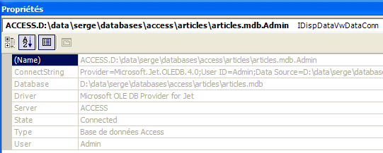
- Es ist hilfreich, die Verbindungszeichenfolge zu kennen. Wir werden sie verwenden, um eine Verbindung zur Datenbank herzustellen:
Provider=Microsoft.Jet.OLEDB.4.0;User ID=Admin;Data Source=D:\data\serge\databases\access\articles\articles.mdb;Mode=Share Deny None;Extended Properties="";Jet OLEDB:System database="";Jet OLEDB:Registry Path="";Jet OLEDB:Engine Type=5;Jet OLEDB:Database Locking Mode=1;Jet OLEDB:Global Partial Bulk Ops=2;Jet OLEDB:Global Bulk Transactions=1;Jet OLEDB:Create System Database=False;Jet OLEDB:Encrypt Database=False;Jet OLEDB:Don't Copy Locale on Compact=False;Jet OLEDB:Compact Without Replica Repair=False;Jet OLEDB:SFP=False
- Aus dieser Zeichenfolge behalten wir nur die folgenden Elemente bei:
2.4.5.2. Der Code für die Klasse [ArticlesDaoOleDb]
Die Klasse [ArticlesDaoOleDb] ist der zuvor besprochenen Klasse [ArticlesDaoPlainODBC] sehr ähnlich. Daher werden wir nur die Änderungen gegenüber der vorherigen Version auflisten:
- Die erforderlichen Klassen befinden sich im Namespace [System.Data.OleDb] statt im Namespace [System.Data.Odbc]
- Die Verbindung [OdbcConnection] ist nun vom Typ [OleDbConnection]
- [OdbcCommand]-Objekte sind nun vom Typ [OleDbCommand]
Der Klassenkonstruktor akzeptiert einen einzigen Parameter: die Datenbankverbindungszeichenfolge:
' manufacturer
Public Sub New(ByVal connectString As String)
' connectString: source connection string OleDb: source connection string connectString: source connection string OleDb: source connection string
'we instantiate the connection
connexion = New OleDbConnection(connectString)
' prepare SQL requests
...
End Sub
Der vollständige Code für die Klasse [ArticlesDaoOleDb] lautet wie folgt:
Imports System
Imports System.Collections
Imports System.Data.OleDb
Namespace istia.st.articles.dao
Public Class ArticlesDaoOleDb
Implements istia.st.articles.dao.IArticlesDao
' private fields
Private connexion As OleDbConnection = Nothing
Private insertCommand As OleDbCommand
Private updatecommand As OleDbCommand
Private deleteSomeCommand As OleDbCommand
Private selectSomeCommand As OleDbCommand
Private updateStockCommand As OleDbCommand
Private deleteAllCommand As OleDbCommand
Private selectAllCommand As OleDbCommand
' manufacturer
Public Sub New(ByVal connectString As String)
' connectString: source connection string OleDb: source connection string connectString: source connection string OleDb: source connection string
'we instantiate the connection
connexion = New OleDbConnection(connectString)
' prepare SQL requests
insertCommand = New OleDbCommand("insert into ARTICLES(id, nom, prix, stockactuel, stockminimum) values (?,?,?,?,?)", connexion)
updatecommand = New OleDbCommand("update ARTICLES set nom=?, prix=?, stockactuel=?, stockminimum=? where id=?", connexion)
deleteSomeCommand = New OleDbCommand("delete from ARTICLES where id=?", connexion)
selectSomeCommand = New OleDbCommand("select id, nom, prix, stockactuel, stockminimum from ARTICLES where id=?", connexion)
updateStockCommand = New OleDbCommand("update ARTICLES set stockactuel=stockactuel+? where id=? and (stockactuel+?)>=0", connexion)
selectAllCommand = New OleDbCommand("select id, nom, prix, stockactuel, stockminimum from ARTICLES", connexion)
deleteAllCommand = New OleDbCommand("delete from ARTICLES", connexion)
End Sub
Public Function ajouteArticle(ByVal unArticle As Article) As Integer Implements IArticlesDao.ajouteArticle
' exclusive section
SyncLock Me
' prepare the insertion request
With insertCommand.Parameters
.Clear()
.Add(New OleDbParameter("id", unArticle.id))
.Add(New OleDbParameter("nom", unArticle.nom))
.Add(New OleDbParameter("prix", unArticle.prix))
.Add(New OleDbParameter("stockactuel", unArticle.stockactuel))
.Add(New OleDbParameter("stockminimum", unArticle.stockminimum))
End With
Try
'it is executed
Return executeUpdate(insertCommand)
Catch ex As Exception
'query error
Throw New Exception(String.Format("Erreur à l'ajout de l'article [{0}] : {1}", unArticle.ToString, ex.Message))
End Try
End SyncLock
End Function
Public Function changerStockArticle(ByVal idArticle As Integer, ByVal mouvement As Integer) As Integer Implements IArticlesDao.changerStockArticle
' exclusive section
SyncLock Me
' prepare the stock update request
With updateStockCommand.Parameters
.Clear()
.Add(New OleDbParameter("mvt1", mouvement))
.Add(New OleDbParameter("id", idArticle))
.Add(New OleDbParameter("mvt2", mouvement))
End With
'it is executed
Try
Return executeUpdate(updateStockCommand)
Catch ex As Exception
'query error
Throw New Exception(String.Format("Erreur lors du changement de stock [idArticle={0}, mouvement={1}] : [{2}]", idArticle, mouvement, ex.Message))
End Try
End SyncLock
End Function
Public Sub clearAllArticles() Implements IArticlesDao.clearAllArticles
' exclusive section
SyncLock Me
Try
'execute the insertion request
executeUpdate(deleteAllCommand)
Catch ex As Exception
'query error
Throw New Exception(String.Format("Erreur lors de la suppression des articles : {0}", ex.Message))
End Try
End SyncLock
End Sub
Public Function getAllArticles() As System.Collections.IList Implements IArticlesDao.getAllArticles
' exclusive section
SyncLock Me
Try
'execute the select query
Dim articles As IList = executeQuery(selectAllCommand)
'we return the list
Return articles
Catch ex As Exception
'query error
Throw New Exception(String.Format("Erreur lors de l'obtention des articles [select id,nom,prix,stockactuel,stockminimum from articles]: {0}", ex.Message))
End Try
End SyncLock
End Function
Public Function getArticleById(ByVal idArticle As Integer) As Article Implements IArticlesDao.getArticleById
' exclusive section
SyncLock Me
' prepare the select query
With selectSomeCommand.Parameters
.Clear()
.Add(New OleDbParameter("id", idArticle))
End With
'it is executed
Try
'execute the query
Dim articles As IList = executeQuery(selectSomeCommand)
'we test if we've found the article
If articles.Count = 0 Then Return Nothing
'we return the item
Return CType(articles.Item(0), Article)
Catch ex As Exception
'query error
Throw New Exception(String.Format("Erreur lors de la recherche de l'article [{0} : {1}", idArticle, ex.Message))
End Try
End SyncLock
End Function
Public Function modifieArticle(ByVal unArticle As Article) As Integer Implements IArticlesDao.modifieArticle
' exclusive section
SyncLock Me
' prepare the update request
With updatecommand.Parameters
.Clear()
.Add(New OleDbParameter("nom", unArticle.nom))
.Add(New OleDbParameter("prix", unArticle.prix))
.Add(New OleDbParameter("stockactuel", unArticle.stockactuel))
.Add(New OleDbParameter("stockminimum", unArticle.stockactuel))
.Add(New OleDbParameter("id", unArticle.id))
End With
' it is executed
Try
'execute the insertion request
Return executeUpdate(updatecommand)
Catch ex As Exception
'query error
Throw New Exception("Erreur lors de la modification de l'article [" + unArticle.ToString + "]", ex)
End Try
End SyncLock
End Function
Public Function supprimeArticle(ByVal idArticle As Integer) As Integer Implements IArticlesDao.supprimeArticle
' exclusive section
SyncLock Me
' prepare the delete request
With deleteSomeCommand.Parameters
.Clear()
.Add(New OleDbParameter("id", idArticle))
End With
'it is executed
Try
'execute the delete request
Return executeUpdate(deleteSomeCommand)
Catch ex As Exception
'query error
Throw New Exception(String.Format("Erreur lors de la suppression de l'article [id={0}] : {1}", idArticle, ex.Message))
End Try
End SyncLock
End Function
Private Function executeQuery(ByVal query As OleDbCommand) As IList
' query execution SELECT
' declaration of the object providing access to all rows in the result table
Dim myReader As OleDbDataReader = Nothing
Try
'create a connection to BDD
connexion.Open()
'execute the query
myReader = query.ExecuteReader()
'declare a list of items and return it later
Dim articles As IList = New ArrayList
Dim unArticle As Article
While myReader.Read()
'we prepare an article with the reader's values
unArticle = New Article
unArticle.id = myReader.GetInt32(0)
unArticle.nom = myReader.GetString(1)
unArticle.prix = myReader.GetDouble(2)
unArticle.stockactuel = myReader.GetInt32(3)
unArticle.stockminimum = myReader.GetInt32(4)
'add the item to the list
articles.Add(unArticle)
End While
'returns the result
Return articles
Finally
' freeing up resources
If Not myReader Is Nothing And Not myReader.IsClosed Then myReader.Close()
If Not connexion Is Nothing Then connexion.Close()
End Try
End Function
Private Function executeUpdate(ByVal sqlCommand As OleDbCommand) As Integer
' execute an update request
Try
'create a connection to BDD
connexion.Open()
'execute the query
Return sqlCommand.ExecuteNonQuery()
Finally
' freeing up resources
If Not connexion Is Nothing Then connexion.Close()
End Try
End Function
End Class
End Namespace
Dem Leser wird empfohlen, diesen Code im Lichte der zuvor bereitgestellten Kommentare zur Klasse [ArticlesDaoPlainODBC] zu überprüfen.
2.4.5.3. Erstellen der [dao]-Layer-Assembly
Das neue Visual Studio-Projekt hat folgende Struktur:

Das Projekt ist so konfiguriert, dass eine DLL mit dem Namen [webarticles-dao.dll] generiert wird:
 |  |
2.4.5.4. NUnit-Tests für die [dao]-Schicht
2.4.5.4.1. Die NUnit-Testklasse
Die NUnit-Testklasse für die Implementierungsklasse [ArticlesDaoOleDb] ist dieselbe wie die für die Klasse [ArticlesDaoPlainODBC] (siehe Abschnitt 2.3.3.2). Wir verfolgen einen ähnlichen Ansatz, um den NUnit-Test für die Klasse vorzubereiten:
- Wir erstellen den Ordner [tests] (rechts) im Visual Studio-Ordner des Projekts [dao-oledb], indem wir den Ordner [tests] aus dem Projekt [dao-odbc] (links) kopieren:
|  |
- Im Ordner [tests] des Projekts [dao-oledb] ersetzen wir die DLL [webarticles-dao.dll] durch die vom Projekt [dao-oledb] generierte DLL [webarticles-dao.dll]
- Wir ändern die Konfigurationsdatei [spring-config.xml], um die neue Klasse [ArticlesDaoOleDb] zu instanziieren:
Kommentare:
- Zeile 7: Das Objekt [articlesdao] ist nun mit einer Instanz der Klasse [ArticlesDaoOleDb] verknüpft
- Diese Klasse verfügt über einen Konstruktor mit einem Argument: die Verbindungszeichenfolge zur OleDb-ACCESS-Datenbank – Zeile 9
2.4.5.4.2. Tests
Wir sind bereit für den Test. Mit der Anwendung [Nunit-Gui] laden wir die DLL [test-webarticles-dao.dll] aus dem oben genannten Ordner [tests] und führen den Test [testGetAllArticles] aus:

Trotz des Namens [NUnitTestArticlesDaoArrayList], der der Testklasse ursprünglich gegeben wurde, ist es tatsächlich die Klasse [ArticlesDaoOleDb], die hier getestet wird. Der Screenshot zeigt, dass wir die Artikel, die wir in die Tabelle [ARTICLES] eingefügt haben, korrekt abgerufen haben. Führen wir nun alle Tests aus:

Leser, die dieses Dokument auf dem Bildschirm betrachten, werden sehen, dass alle Tests bestanden wurden (grüne Farbe).
2.4.5.5. Integration der neuen [dao]-Schicht in die [webarticles]-Anwendung
Wir folgen der in Abschnitt 2.3.4 beschriebenen Vorgehensweise. Wir nehmen folgende Änderungen am Inhalt des Ordners [runtime] vor:
- Im Ordner [bin] wird die DLL für die alte [dao]-Schicht durch die DLL für die neue [dao]-Schicht ersetzt, die von der Klasse [ArticlesDaoOleDb] implementiert wird
- In [runtime] wird die Konfigurationsdatei [web.config] durch eine Datei ersetzt, die die neue Implementierungsklasse berücksichtigt:
Kommentare:
- In den Zeilen 14–18 wird das Singleton [articlesDao] mit einer Instanz der neuen Klasse [ArticlesDaoOleDb] verknüpft. Dies ist die einzige Änderung.
Wir behalten die gleiche [Cassini]-Webserverkonfiguration wie zuvor bei. Wir initialisieren die Produkttabelle mit den folgenden Werten:
Stellen Sie sicher, dass die Artikeldatenbank nicht von einem Programm wie Visual Studio oder Access verwendet wird. Über einen Browser rufen wir die URL [http://localhost/webarticles/main.aspx] auf:

 |
Nun überprüfen wir den Inhalt der Tabelle [ARTICLES] mit Access:

Die Artikel [pants] und [skirt] wurden gekauft, und ihre Lagerbestände wurden um die gekaufte Menge reduziert. Der Artikel [coat] konnte nicht gekauft werden, da die angeforderte Menge den Lagerbestand überstieg. Wir laden den Leser ein, weitere Tests durchzuführen.
2.5. Die Implementierungsklasse [ArticlesDaoFirebirdProvider]
2.5.1. Der Firebird-net-provider
Bisher haben wir eine [Firebird]-Datenquelle über einen ODBC-Treiber verwendet. ODBC-Treiber bieten zwar eine hohe Wiederverwendbarkeit für den Code, der sie nutzt, sind jedoch weniger effizient als Treiber, die speziell für das jeweilige DBMS geschrieben wurden. Das [Firebird]-DBMS kann über eine Bibliothek spezifischer Klassen genutzt werden, die von der Firebird-Website [http://firebird.sourceforge.net/] heruntergeladen werden kann. Die Download-Seite bietet die folgenden Links (Stand: April 2005):

Über den Link [firebird-net-provider] können die .NET-Klassen für den Zugriff auf das Firebird-DBMS heruntergeladen werden. Durch die Installation des Pakets wird ein Ordner erstellt, der in etwa wie folgt aussieht:

Zwei Elemente sind für uns von Interesse:
- [FirebirdSql.Data.Firebird.dll]: die Assembly, die die .NET-Klassen für den Zugriff auf das Firebird-DBMS enthält
- [FirebirdNETProviderSDK.chm]: die Dokumentation zu diesen Klassen
Als Nächstes müssen wir zwei Schritte durchführen, damit ein Visual Studio-Projekt diese Klassen nutzen kann:
- Wir legen die Assembly [FirebirdSql.Data.Firebird.dll] im Ordner [bin] des Projekts ab
- diese Assembly zu den Referenzen des Projekts hinzufügen
2.5.2. Der Code für die Klasse [ArticlesDaoFirebirdProvider]
Die Klasse [ArticlesDaoFirebirdProvider] ist der zuvor besprochenen Klasse [ArticlesDaoSqlServer] sehr ähnlich. Daher werden wir nur die Änderungen hervorheben, die im Vergleich zu dieser Version vorgenommen wurden:
- Die erforderlichen Klassen befinden sich im Namespace [FirebirdSql.Data.Firebird] statt im Namespace [System.Data.SqlClient]
- Die Verbindung [SqlConnection] ist nun vom Typ [FbConnection]
- [SqlCommand]-Objekte sind nun vom Typ [FbCommand]
- [SqlParameter]-Objekte sind nun vom Typ [FbParameter]
Der Klassenkonstruktor akzeptiert vier Parameter, die er zum Erstellen der Verbindungszeichenfolge zur Datenbank verwendet:
' manufacturer
Public Sub New(ByVal serveur As String, ByVal databaseName As String, ByVal uid As String, ByVal password As String)
' server: name of the SGBD host machine
' databaseName: path to database
' uid: identity of the user logging in
' password: your password
...
End Sub
Der vollständige Code für die Klasse [ArticlesDaoFirebirdProvider] lautet wie folgt:
Imports System
Imports System.Collections
Imports FirebirdSql.Data.Firebird
Namespace istia.st.articles.dao
Public Class ArticlesDaoFirebirdProvider
Implements istia.st.articles.dao.IArticlesDao
' private fields
Private connexion As FbConnection = Nothing
Private databasePath As String
Private insertCommand As FbCommand
Private updatecommand As FbCommand
Private deleteSomeCommand As FbCommand
Private selectSomeCommand As FbCommand
Private updateStockCommand As FbCommand
Private deleteAllCommand As FbCommand
Private selectAllCommand As FbCommand
' manufacturer
Public Sub New(ByVal serveur As String, ByVal databasePath As String, ByVal uid As String, ByVal password As String)
' server: name of the SGBD Firebird host machine
' databaseName: path to the database to be used
' uid: identity of the user connecting to the database
' password: your password
'retrieve the name of the database passed as an argument
Me.databasePath = databasePath
'we instantiate the connection
Dim connectString As String = String.Format("DataSource={0};Database={1};User={2};Password={3}", serveur, databasePath, uid, password)
connexion = New FbConnection(connectString)
' prepare SQL requests
insertCommand = New FbCommand("insert into ARTICLES(id, nom, prix, stockactuel, stockminimum) values (@id,@nom,@prix,@sa,@sm)", connexion)
updatecommand = New FbCommand("update ARTICLES set nom=@nom, prix=@prix, stockactuel=@sa, stockminimum=@sm where id=@id", connexion)
deleteSomeCommand = New FbCommand("delete from ARTICLES where id=@id", connexion)
selectSomeCommand = New FbCommand("select id, nom, prix, stockactuel, stockminimum from ARTICLES where id=@id", connexion)
updateStockCommand = New FbCommand("update ARTICLES set stockactuel=stockactuel+@mvt where id=@id and (stockactuel+@mvt)>=0", connexion)
selectAllCommand = New FbCommand("select id, nom, prix, stockactuel, stockminimum from ARTICLES", connexion)
deleteAllCommand = New FbCommand("delete from ARTICLES", connexion)
End Sub
Public Function ajouteArticle(ByVal unArticle As Article) As Integer Implements IArticlesDao.ajouteArticle
' exclusive section
SyncLock Me
' prepare the insertion request
With insertCommand.Parameters
.Clear()
.Add(New FbParameter("@id", unArticle.id))
.Add(New FbParameter("@nom", unArticle.nom))
.Add(New FbParameter("@prix", unArticle.prix))
.Add(New FbParameter("@sa", unArticle.stockactuel))
.Add(New FbParameter("@sm", unArticle.stockminimum))
End With
Try
'it is executed
Return executeUpdate(insertCommand)
Catch ex As Exception
'query error
Throw New Exception(String.Format("Erreur à l'ajout de l'article [{0}] : {1}", unArticle.ToString, ex.Message))
End Try
End SyncLock
End Function
Public Function changerStockArticle(ByVal idArticle As Integer, ByVal mouvement As Integer) As Integer Implements IArticlesDao.changerStockArticle
' exclusive section
SyncLock Me
' prepare the stock update request
With updateStockCommand.Parameters
.Clear()
.Add(New FbParameter("@mvt", mouvement))
.Add(New FbParameter("@id", idArticle))
End With
'it is executed
Try
Return executeUpdate(updateStockCommand)
Catch ex As Exception
'query error
Throw New Exception(String.Format("Erreur lors du changement de stock [idArticle={0}, mouvement={1}] : [{2}]", idArticle, mouvement, ex.Message))
End Try
End SyncLock
End Function
Public Sub clearAllArticles() Implements IArticlesDao.clearAllArticles
' exclusive section
SyncLock Me
Try
'execute the insertion request
executeUpdate(deleteAllCommand)
Catch ex As Exception
'query error
Throw New Exception(String.Format("Erreur lors de la suppression des articles : {0}", ex.Message))
End Try
End SyncLock
End Sub
Public Function getAllArticles() As System.Collections.IList Implements IArticlesDao.getAllArticles
' exclusive section
SyncLock Me
Try
'execute the select query
Dim articles As IList = executeQuery(selectAllCommand)
'we return the list
Return articles
Catch ex As Exception
'query error
Throw New Exception(String.Format("Erreur lors de l'obtention des articles [select id,nom,prix,stockactuel,stockminimum from articles]: {0}", ex.Message))
End Try
End SyncLock
End Function
Public Function getArticleById(ByVal idArticle As Integer) As Article Implements IArticlesDao.getArticleById
' exclusive section
SyncLock Me
' prepare the select query
With selectSomeCommand.Parameters
.Clear()
.Add(New FbParameter("@id", idArticle))
End With
'it is executed
Try
'execute the query
Dim articles As IList = executeQuery(selectSomeCommand)
'we test if we've found the article
If articles.Count = 0 Then Return Nothing
'we return the item
Return CType(articles.Item(0), Article)
Catch ex As Exception
'query error
Throw New Exception(String.Format("Erreur lors de la recherche de l'article [{0} : {1}", idArticle, ex.Message))
End Try
End SyncLock
End Function
Public Function modifieArticle(ByVal unArticle As Article) As Integer Implements IArticlesDao.modifieArticle
' exclusive section
SyncLock Me
' prepare the update request
With updatecommand.Parameters
.Clear()
.Add(New FbParameter("@nom", unArticle.nom))
.Add(New FbParameter("@prix", unArticle.prix))
.Add(New FbParameter("@sa", unArticle.stockactuel))
.Add(New FbParameter("@sm", unArticle.stockminimum))
.Add(New FbParameter("@id", unArticle.id))
End With
' it is executed
Try
'execute the insertion request
Return executeUpdate(updatecommand)
Catch ex As Exception
'query error
Throw New Exception("Erreur lors de la modification de l'article [" + unArticle.ToString + "]", ex)
End Try
End SyncLock
End Function
Public Function supprimeArticle(ByVal idArticle As Integer) As Integer Implements IArticlesDao.supprimeArticle
' exclusive section
SyncLock Me
' prepare the delete request
With deleteSomeCommand.Parameters
.Clear()
.Add(New FbParameter("@id", idArticle))
End With
'it is executed
Try
'execute the delete request
Return executeUpdate(deleteSomeCommand)
Catch ex As Exception
'query error
Throw New Exception(String.Format("Erreur lors de la suppression de l'article [id={0}] : {1}", idArticle, ex.Message))
End Try
End SyncLock
End Function
Private Function executeQuery(ByVal query As FbCommand) As IList
' query execution SELECT
' declaration of the object providing access to all rows in the result table
Dim myReader As FbDataReader = Nothing
Try
'create a connection to BDD
connexion.Open()
'execute the query
myReader = query.ExecuteReader()
'declare a list of items and return it later
Dim articles As IList = New ArrayList
Dim unArticle As Article
While myReader.Read()
'we prepare an article with the reader's values
unArticle = New Article
unArticle.id = myReader.GetInt32(0)
unArticle.nom = myReader.GetString(1)
unArticle.prix = myReader.GetDouble(2)
unArticle.stockactuel = myReader.GetInt32(3)
unArticle.stockminimum = myReader.GetInt32(4)
'add the item to the list
articles.Add(unArticle)
End While
'returns the result
Return articles
Finally
' freeing up resources
If Not myReader Is Nothing And Not myReader.IsClosed Then myReader.Close()
If Not connexion Is Nothing Then connexion.Close()
End Try
End Function
Private Function executeUpdate(ByVal updateCommand As FbCommand) As Integer
' execute an update request
Try
'create a connection to BDD
connexion.Open()
'execute the query
Return updateCommand.ExecuteNonQuery()
Finally
' freeing up resources
If Not connexion Is Nothing Then connexion.Close()
End Try
End Function
End Class
End Namespace
Dem Leser wird empfohlen, diesen Code im Lichte der zuvor bereitgestellten Kommentare zur Klasse [ArticlesDaoSqlServer] zu überprüfen.
2.5.3. Erstellen der [dao]-Layer-Assembly
Das neue Visual Studio-Projekt hat folgende Struktur:

Beachten Sie das Vorhandensein der Assembly [FirebirdSql.Data.Firebird.dll] in den Projektreferenzen. Diese DLL wurde im Ordner [bin] des Projekts abgelegt. Das Projekt ist so konfiguriert, dass eine DLL mit dem Namen [webarticles-dao.dll] generiert wird:
 |  |
2.5.4. NUnit-Tests für die [dao]-Schicht
2.5.4.1. Die NUnit-Testklasse
Die NUnit-Testklasse für die Implementierungsklasse [ArticlesDaoFirebirdProvider] ist dieselbe wie für die Klasse [ArticlesDaoPlainODBC] (siehe Abschnitt 2.3.3.2). Wir verfolgen einen ähnlichen Ansatz, um den NUnit-Test für die Klasse [ArticlesDaoFirebirdProvider] vorzubereiten:
- Wir erstellen den Ordner [tests] (rechts) im Visual Studio-Ordner des Projekts [dao-firebird-provider], indem wir den Ordner [bin] aus dem Testprojekt der [dao-odbc]-Schicht (links) kopieren:
|  |
- Im Ordner [tests] ersetzen wir die DLL [webarticles-dao.dll] durch die aus dem Projekt [dao-firebird-provider] generierte DLL [webarticles-dao.dll]
- Wir ändern die Konfigurationsdatei [spring-config.xml], um die neue Klasse [ArticlesDaoFirebirdProvider] zu instanziieren:
Kommentare:
- Zeile 7: Das Objekt [articlesdao] ist nun mit einer Instanz der Klasse [ArticlesDaoFirebirdProvider] verknüpft
- Diese Klasse verfügt über einen Konstruktor mit vier Argumenten
- den DBMS-Host – Zeile 9
- den Pfad zur Firebird-Datenbank – Zeile 12
- den Benutzernamen des sich anmeldenden Benutzers – Zeile 15
- dessen Passwort – Zeile 18
2.5.4.2. Tests
Die Tabelle [ARTICLES] in der Datenquelle wird mit den folgenden Einträgen gefüllt (verwenden Sie IBExpert):

Wir sind bereit, die Tests auszuführen. Mit der Anwendung [Nunit-Gui] laden wir die DLL [test-webarticles-dao.dll] aus dem oben genannten Ordner [tests] und führen den Test [testGetAllArticles] aus:

Trotz des Namens [NUnitTestArticlesDaoArrayList], der der Testklasse ursprünglich gegeben wurde, ist es tatsächlich die Klasse [ArticlesDaoFirebirdProvider], die hier getestet wird. Der Screenshot zeigt, dass wir die Artikel, die wir in die Tabelle [ARTICLES] eingefügt haben, korrekt abgerufen haben. Führen wir nun alle Tests aus:
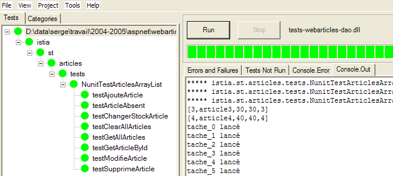
Leser, die dieses Dokument auf dem Bildschirm betrachten, sehen, dass alle Tests bestanden wurden (grün). Was sie nicht sehen können, ist, dass die Tests deutlich schneller liefen als bei der Artikeldatenbank, auf die in unserer ersten Implementierung über einen ODBC-Treiber zugegriffen wurde.
2.5.5. Integration der neuen [dao]-Schicht in die [webarticles]-Anwendung
Wir folgen dem bereits zweimal erläuterten Verfahren, insbesondere in Abschnitt 2.3.4. Wir nehmen folgende Änderungen am Inhalt des Ordners [runtime] vor:
- Im Ordner [bin] wird die DLL für die alte [dao]-Schicht durch die DLL für die neue [dao]-Schicht ersetzt, die von der Klasse [ArticlesDaoFirebirdProvider] implementiert wird. Außerdem legen wir dort die von Firebird benötigte DLL [FirebirdSql.Data.Firebird.dll] ab:

- In [runtime] wird die Konfigurationsdatei [web.config] durch eine Datei ersetzt, die die neue Implementierungsklasse berücksichtigt:
Kommentare:
- In den Zeilen 14–27 wird das Singleton [articlesDao] mit einer Instanz der neuen Klasse [ArticlesDaoFirebirdProvider] verknüpft. Dies ist die einzige Änderung.
Wir sind bereit für den Test. Wir konfigurieren den [Cassini]-Webserver wie in den vorherigen Tests. Wir initialisieren die Tabelle „articles“ mit den folgenden Werten:

Über einen Browser geben wir die URL [http://localhost/webarticles/main.aspx] ein:

 |
Sehen wir uns nun den Inhalt der Tabelle [ARTICLES] an:
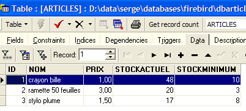
Die Artikel [Bleistift] und [50-Blatt-Block] wurden gekauft, und ihre Lagerbestände wurden um die gekaufte Menge reduziert. Der Artikel [Füllfederhalter] konnte nicht gekauft werden, da die angeforderte Menge den Lagerbestand überstieg. Wir laden den Leser ein, weitere Tests durchzuführen.
2.5.6. Die Implementierungsklasse [ArticlesDaoSqlMap]
2.5.6.1. Das Produkt Ibatis SqlMap
Wir haben vier verschiedene Implementierungen der [dao]-Schicht für unsere [webarticles]-Anwendung geschrieben. In jedem Fall konnten wir die neue [dao]-Schicht in die [webarticles]-Anwendung integrieren, ohne die beiden anderen Schichten, [web] und [domain], neu zu kompilieren. Dies wurde, zur Erinnerung, durch zwei architektonische Entscheidungen erreicht:
- Zugriff auf die Schichten über Schnittstellen
- Integration der Schichten mithilfe von Spring
Wir möchten noch einen Schritt weiter gehen. Obwohl sie unterschiedlich sind, weisen unsere vier Implementierungen der [dao]-Schicht auffällige Ähnlichkeiten auf. Nachdem die erste Implementierung geschrieben war, wurden die anderen drei fast ausschließlich durch Kopieren und Einfügen sowie das Ersetzen bestimmter Schlüsselwörter durch andere erstellt. Die Logik blieb jedoch unverändert. Man könnte sich fragen, ob es möglich wäre, eine einzige Implementierung zu haben, die uns von den verschiedenen Methoden des Datenzugriffs befreien würde. Wir haben vier verwendet:
- Zugriff über einen ODBC-Treiber auf eine ODBC-Datenquelle
- direkter Zugriff auf eine SQL-Server-Datenbank
- Zugriff über einen Ole-DB-Treiber auf eine Ole-DB-Datenquelle
- direkter Zugriff auf eine Firebird-Datenbank
Das Ibatis-Tool „SqlMap“ [[http://www.ibatis.com/]] ermöglicht die Entwicklung von Datenzugriffsschichten, die unabhängig von der tatsächlichen Beschaffenheit der Datenquelle sind. Der Datenzugriff erfolgt über:
- Konfigurationsdateien, die Informationen enthalten, welche die Datenquelle und die darauf auszuführenden Operationen definieren
- einer Klassenbibliothek, die diese Informationen für den Zugriff auf die Daten nutzt
Das Ibatis SqlMap-Tool wurde ursprünglich für die Java-Plattform entwickelt. Die Portierung auf die .NET-Plattform ist noch jung und scheint teilweise fehlerhaft zu sein (persönliche Einschätzung, die einer gründlichen Überprüfung bedürfte). Da sich das Tool jedoch auf der Java-Plattform bewährt hat, erscheint es sinnvoll, die .NET-Version vorzustellen.
2.5.6.2. Wo finde ich die IBATIS SqlMap- ?
Die Hauptwebsite von Firebird ist [http://www.ibatis.com/]. Die Download-Seite bietet die folgenden Links:
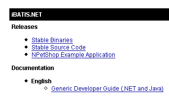
Wählen Sie den Link [Stable Binaries], der Sie zu [SourceForge.net] weiterleitet. Führen Sie den Download-Vorgang bis zum Abschluss durch. Sie erhalten eine ZIP-Datei, die folgende Dateien enthält:

In einem Visual Studio-Projekt, das iBatis SqlMap verwendet, müssen Sie zwei Dinge tun:
- Legen Sie die oben genannten Dateien im [bin]-Ordner des Projekts ab
- Fügen Sie dem Projekt einen Verweis auf jede dieser Dateien hinzu
2.5.6.3. iBatis SqlMap-Konfigurationsdateien
Eine [SqlMap]-Datenquelle wird mithilfe der folgenden Konfigurationsdateien definiert:
- providers.config: definiert die Klassenbibliotheken, die für den Zugriff auf Daten verwendet werden sollen
- sqlmap.config: definiert die Verbindungseinstellungen
- Mapping-Dateien: definieren die Operationen, die an den Daten durchgeführt werden sollen
Die Logik hinter diesen Dateien ist wie folgt:
- Um auf die Daten zuzugreifen, benötigen wir eine Verbindung. Dazu sind uns bereits mehrere Klassen begegnet: OdbcConnection, SqlConnection, OleDbConnection, FbConnection. Außerdem benötigen wir ein [Command]-Objekt, um SQL-Abfragen auszuführen: OdbcCommand, SqlCommand, OleDbCommand, FbCommand usw. In der Datei [providers.config] definieren wir alle Klassen, die wir benötigen.
- Die Datei [sqlmap.config] definiert im Wesentlichen die Verbindungszeichenfolge zur Datenbank, die die Daten enthält. Die Datenbankverbindung wird durch Instanziierung der in [providers.config] definierten Klasse [Connection] geöffnet, deren Konstruktor die in [sqlmap.config] definierte Verbindungszeichenfolge übergeben bekommt.
- Die Mapping-Dateien definieren:
- Zuordnungen zwischen Zeilen in Datentabellen und .NET-Klassen, deren Instanzen diese Zeilen enthalten
- die auszuführenden SQL-Operationen. Diese werden durch einen Namen identifiziert. Der .NET-Code führt diese Operationen über ihre Namen aus, wodurch jeglicher SQL-Code aus dem .NET-Code entfernt wird.
2.5.6.4. Die Konfigurationsdateien für das [dao-sqlmap]-Projekt
Betrachten wir anhand eines Beispiels die genaue Beschaffenheit der Konfigurationsdateien von SqlMap. Wir betrachten den Fall, in dem die Datenquelle die Firebird-ODBC-Quelle aus Abschnitt 2.3.3.1 ist.
2.5.6.4.1. providers.config
Die Datei [providers.config] für eine ODBC-Quelle sieht wie folgt aus:
Kommentare:
- Eine [providers.config]-Datei ist im [SqlMap]-Paket enthalten. Sie bietet mehrere Standard-Provider. Der obige Code stammt direkt aus dieser Datei.
- Ein <provider> hat einen Namen – Zeile 6 –, der beliebig sein kann
- Ein <provider> kann aktiviert [enabled=true] oder deaktiviert [enabled=false] werden. Ist er aktiviert, muss die in Zeile 8 referenzierte DLL verfügbar sein. Eine [providers.config]-Datei kann mehrere <provider>-Tags enthalten.
- Zeile 8 – Name der Assembly, die die in den Zeilen 9–15 definierten Klassen enthält
- Zeile 9 – Klasse, die zum Erstellen einer Verbindung verwendet wird
- Zeile 10 – Klasse, die zum Erstellen eines [Command]-Objekts zur Ausführung von SQL-Befehlen verwendet wird
- Zeile 11 – Klasse zur Verwaltung der Parameter eines parametrisierten SQL-Befehls
- Zeile 12 – Enumerationsklasse der möglichen Datentypen für Tabellenfelder
- Zeile 13 – Name der Eigenschaft eines [Parameter]-Objekts, die den Typ des Werts dieses Parameters enthält
- Zeile 14 – Name der [Adapter]-Klasse, die zum Erstellen von [DataSet]-Objekten aus der Datenquelle verwendet wird
- Zeile 15 – Name der [CommandBuilder]-Klasse, die, wenn sie mit einem [Adapter]-Objekt verknüpft ist, automatisch dessen [InsertCommand, DeleteCommand, UpdateCommand]-Eigenschaften aus dessen [SelectCommand]-Eigenschaft generiert
- Zeilen 16–19 – definieren, wie parametrisierte SQL-Befehle behandelt werden. Je nach Situation könnten Sie beispielsweise schreiben:
oder
Im ersten Fall handelt es sich um formale Positionsparameter. Ihre tatsächlichen Werte müssen in der Reihenfolge der formalen Parameter angegeben werden. Im zweiten Fall handelt es sich um benannte Parameter. Ein Wert für einen solchen Parameter wird durch Angabe seines Namens bereitgestellt. Die Reihenfolge spielt dabei keine Rolle mehr.
- Zeile 16 – gibt an, dass ODBC-Quellen Positionsparameter verwenden
- Zeilen 17–19 – betreffen benannte Parameter. Hier gibt es keine.
Anhand dieser Informationen weiß SqlMap beispielsweise, welche Klasse es instanziieren muss, um eine Verbindung herzustellen. Hier ist dies die Klasse [OdbcConnection] (Zeile 9).
2.5.6.4.2. sqlmap.config
Die Datei [providers.config] definiert die Klassen, die für den Zugriff auf eine ODBC-Quelle verwendet werden sollen. Sie gibt keine ODBC-Quellen an. Dies übernimmt die Datei [sqlmap.config]:
Kommentare:
- Zeile 3 – Wir definieren eine Eigenschaftsdatei [properties.xml]. Diese Datei definiert Schlüssel-Wert-Paare. Die Schlüssel können beliebig sein. Der mit einem Schlüssel C verknüpfte Wert wird mithilfe der Notation ${C} in [sqlmap.config] abgerufen. Hier ist die Datei [properties.xml], die mit der vorherigen Datei [sqlmap.config] verknüpft wird:
Zeile 3 – Der Schlüssel [provider] wird definiert. Sein Wert ist der Name des <provider>-Tags, das in [providers.config] verwendet werden soll
Zeile 4 – Der Schlüssel [connectionString] wird definiert. Sein Wert ist die Verbindungszeichenfolge, die zum Herstellen einer Verbindung zur Firebird-ODBC-Datenquelle verwendet wird.
- Zeilen 4–7 – Konfigurationsparameter:
- Zeile 5 – SQL-Abfragen werden durch einen Namen identifiziert, der selbst Teil eines Namensraums sein kann. [useStatementNamespaces="false"] gibt an, dass keine Namensräume verwendet werden.
- Zeile 6 – SqlMap verfügt über verschiedene Caching-Strategien, um den Zugriff auf die Datenquelle zu minimieren. [cacheModelsEnabled="false"] gibt an, dass keine davon verwendet wird.
- Zeilen 9–13 – Die Eigenschaften der Datenquelle werden definiert:
- Zeile 10 – Name des <provider> aus [providers.config], der verwendet werden soll
- Zeile 11 – Verbindungszeichenfolge zur Datenquelle
- Zeile 12 – Transaktionsmanager. Wir haben ihn hier nicht verwendet, die Zeile jedoch beibehalten, da sie in der Standard-Distributionsdatei enthalten war.
- Zeilen 14–16 – Liste der Dateien, die die auf der Datenquelle auszuführenden SQL-Operationen definieren.
- Zeile 15 – definiert die Zuordnungsdatei [articles.xml]
2.5.6.4.3. articles.xml
Diese Datei dient zwei Zwecken:
- Definition einer Objektzuordnung für die Datenquellentabellen. Im einfachsten Fall läuft dies darauf hinaus, eine Klasse mit einer Zeile in einer Tabelle zu verknüpfen.
- Definition parametrisierter SQL-Operationen und deren Benennung.
Wir verwenden die folgende [articles.xml]-Datei:
Kommentare:
- Zeilen 4–11 – Wir definieren eine Zuordnung zwischen einer Zeile in der Tabelle [ARTICLES] der Datenquelle und der Klasse [istia.st.articles.dao.Article]. Jede Spalte der Tabelle ist einer Eigenschaft der Klasse [Article] zugeordnet. Diese Zuordnung ermöglicht es [SqlMap], das Ergebnis einer SQL-SELECT-Operation zu konstruieren. Jede Ergebniszeile aus dem SELECT wird gemäß den Zuordnungsregeln in ein [Article]-Objekt eingefügt.
- Zeile 5 – Die Zuordnung ist in einem <resultMap>-Tag eingeschlossen und wird über das Attribut [id="article"] benannt. Die zugehörige Klasse wird durch das Attribut [class="istia.st.articles.dao.Article"] angegeben.
- Zeilen 14–44 – Die erforderlichen SQL-Operationen werden definiert
- Zeilen 16–18 – Eine SELECT-Operation mit dem Namen [getAllArticles] wird definiert
- Zeile 16 – Die SELECT-Operation erhält den Namen [name="getAllArticles"] und das zu verwendende Mapping wird durch das Attribut [resultMap="article"] definiert. Dies bezieht sich auf das Mapping in den Zeilen 5–11
- Zeile 17 – Text des auszuführenden SQL-Befehls
- Zeilen 20–22 – Wir definieren den SQL-Delete-Befehl [clearAllArticles], um die Tabelle „articles“ zu leeren.
- Zeilen 24–27 – Wir definieren den SQL-Insert-Befehl [insertArticle], um einen neuen Eintrag zur Tabelle „items“ hinzuzufügen. Dies ist eine parametrisierte Abfrage unter Verwendung der Elemente (#id#, #name#, #price#, #currentStock#, #minStock#). Die Werte für diese fünf Elemente stammen aus einem [Article]-Objekt, das als Parameter übergeben wird: [parameterClass="istia.st.articles.dao.Article"]. Das Parameterobjekt muss die Eigenschaften (id, name, price, currentStock, minimumStock) enthalten, auf die der parametrisierte SQL-Befehl verweist.
- Zeilen 29–31 – Wir definieren den SQL-Löschbefehl [deleteArticle], der dazu dient, einen Artikel zu löschen, dessen Nummer #value# bekannt ist. Diese Nummer wird als Parameter übergeben: [parameterClass="int"]. Dies ist eine allgemeine Regel. Wenn der Parameter eindeutig ist, wird er im SQL-Befehlstext durch das Schlüsselwort #value# referenziert.
- Zeilen 33–35 – Wir definieren den SQL-Update-Befehl [modifyArticle], um einen Artikel zu ändern, dessen Nummer bekannt ist. Wie beim Befehl [insertArticle] stammen die fünf erforderlichen Informationen aus den Eigenschaften eines [istia.st.articles.dao.Article]-Objekts.
- Zeilen 37–39 – Wir definieren den SQL-Select-Befehl [getArticleById], der den Datensatz für einen Artikel abruft, dessen Nummer bekannt ist.
- Zeilen 41–43 – Wir definieren den SQL-Update-Befehl [changerStockArticle], der das Feld [stockactuel] eines Artikels mit bekannter Nummer ändert. Die beiden erforderlichen Informationen – die Artikelnummer #id# und die Bestandserhöhung #mouvement# – befinden sich in einem Wörterbuch: [parameterClass="Hashtable"]. Dieses Wörterbuch muss zwei Schlüssel enthalten: id und mouvement. Die diesen beiden Schlüsseln zugeordneten Werte werden im SQL-Befehl verwendet.
2.5.6.4.4. Speicherort der Konfigurationsdateien
Wir betrachten zwei verschiedene Szenarien:
- Im Falle eines Nunit-Tests werden die [SqlMap]-Konfigurationsdateien im selben Ordner wie die getesteten Binärdateien abgelegt.
- Im Falle einer Webanwendung werden sie im Stammverzeichnis der Anwendung abgelegt.
2.5.6.5. Die SqlMap-API
Die SqlMap-Klassen sind in DLLs enthalten, die normalerweise im [bin]-Ordner der Anwendung abgelegt werden:

Anwendungen, die SqlMap-Klassen verwenden, müssen den Namespace [IBatisNet.DataMapper] importieren:
Alle SQL-Operationen werden über ein Singleton vom Typ [Mapper] ausgeführt, einer Klasse im Namespace [IBatisNet.DataMapper]. Das Singleton wird wie folgt abgerufen:
Um den SqlMap-Befehl [getAllArticles] auszuführen, schreiben wir:
- Die Methode [QueryForList] gibt das Ergebnis eines SELECT-Befehls als Liste zurück
- Der erste Parameter ist der Name des auszuführenden SQL-Befehls (siehe articles.xml)
- Der zweite Parameter ist der an die SQL-Abfrage zu übergebende Parameter. Er muss dem Attribut [parameterClass] des Befehls SqlMap entsprechen. In [articles.xml] haben wir [parameterClass=Nothing]. Daher übergeben wir hier einen Null-Zeiger.
- Das Ergebnis ist vom Typ IList. Die Objekte in dieser Liste werden durch das Attribut [resultMap] des SQL-select-Befehls festgelegt: [resultMap="article"]. „article“ ist ein Mapping-Name:
Die mit diesem Mapping verknüpfte Klasse ist [istia.st.articles.dao.Article]. Letztendlich ist die oben definierte Variable [articles] eine Liste von [istia.st.articles.dao.Article]-Objekten. Wir haben somit die gesamte Tabelle [ARTICLES] in einer einzigen Anweisung abgerufen. Ist die Tabelle [ARTICLES] leer, erhalten wir ein [IList]-Objekt mit 0 Elementen.
Um den SqlMap-Befehl [getArticleById] auszuführen, schreiben wir:
- Die Methode [QueryForObject] ruft das Ergebnis eines SELECT-Befehls ab, der nur eine Zeile zurückgibt
- Der erste Parameter ist der Name des auszuführenden SqlMap-Befehls
- Der zweite Parameter ist der an die SQL-Abfrage zu übergebende Parameter. Er muss dem Attribut [parameterClass] des SqlMap-Befehls entsprechen. In [articles.xml] haben wir [parameterClass="int"]. Daher übergeben wir hier eine Ganzzahl, die die ID des gesuchten Artikels darstellt.
- Das Ergebnis ist vom Typ Object. Wenn der SELECT-Befehl keine Zeilen zurückgegeben hat, ist das Ergebnis ein Null-Zeiger (nichts).
Um den SqlMap-Befehl [insertArticle] auszuführen, schreiben wir:
- Mit der Methode [Insert] können Sie SQL-INSERT-Befehle ausführen
- Der erste Parameter ist der Name des auszuführenden SqlMap-Befehls
- Der zweite Parameter ist der an ihn zu übergebende Parameter. Er muss dem Attribut [parameterClass] des SqlMap-Befehls entsprechen. In [articles.xml] haben wir [parameterClass="istia.st.articles.dao.Article"]. Daher übergeben wir hier ein Objekt vom Typ [istia.st.articles.dao.Article].
Um den SqlMap-Befehl [deleteArticle] auszuführen, schreiben wir:
- Mit der Methode [Delete] können Sie SQL-DELETE-Befehle ausführen
- Der erste Parameter ist der Name des auszuführenden SQL-Befehls
- Der zweite Parameter ist der an den Befehl zu übergebende Parameter. Er muss dem Attribut [parameterClass] des SqlMap-Befehls entsprechen. In [articles.xml] haben wir [parameterClass="int"]. Daher übergeben wir hier die ID des zu löschenden Artikels.
- Das Ergebnis der [Delete]-Methode ist die Anzahl der gelöschten Zeilen
Um den SqlMap-Befehl [clearAllArticles] auszuführen, schreiben wir analog dazu:
Um den SqlMap-Befehl [modifyArticle] auszuführen, schreiben wir:
- Mit der Methode [Update] können Sie SQL-UPDATE-Befehle ausführen
- Der erste Parameter ist der Name des auszuführenden SqlMap-Befehls
- Der zweite Parameter ist der an ihn zu übergebende Parameter. Er muss dem Attribut [parameterClass] des SqlMap-Befehls entsprechen. In [articles.xml] haben wir [parameterClass="istia.st.articles.dao.Article"]. Daher übergeben wir hier ein Objekt vom Typ [istia.st.articles.dao.Article].
- Das Ergebnis der [Update]-Methode ist die Anzahl der geänderten Zeilen.
Um den SqlMap-Befehl [changerStockArticle] auszuführen, würden wir analog dazu schreiben:
Dim paramètres As New Hashtable(2)
paramètres("id") = idArticle
paramètres("mouvement") = mouvement
' update
dim nbLignes as Integer= mappeur.Update("changerStockArticle", paramètres)
- Der zweite Parameter entspricht dem Attribut [parameterClass] des Befehls SqlMap. In [articles.xml] haben wir [parameterClass="Hashtable"]. Der parametrisierte SQL-Befehl [changeItemStock] verwendet die Parameter [id, movement]. Daher übergeben wir hier ein Wörterbuch mit diesen beiden Schlüsseln.
2.5.6.6. Der Code für die Klasse [ArticlesDaoSqlMap]
Auf der Grundlage der vorangegangenen Erläuterungen können wir nun die folgende neue Implementierungsklasse [ArticlesDaoSqlMap] schreiben:
Option Explicit On
Option Strict On
Imports System
Imports IBatisNet.DataMapper
Imports System.Collections
Namespace istia.st.articles.dao
Public Class ArticlesDaoSqlMap
Implements IArticlesDao
' private fields
Dim mappeur As SqlMapper = Mapper.Instance
' list of all items
Public Function getAllArticles() As IList Implements IArticlesDao.getAllArticles
SyncLock Me
Try
Return mappeur.QueryForList("getAllArticles", Nothing)
Catch ex As Exception
Throw New Exception("Echec de l'obtention de tous les articles : [" + ex.ToString + "]")
End Try
End SyncLock
End Function
' add an item
Public Function ajouteArticle(ByVal unArticle As Article) As Integer Implements IArticlesDao.ajouteArticle
SyncLock Me
Try
' unArticle : item to add
' insertion
mappeur.Insert("insertArticle", unArticle)
Return 1
Catch ex As Exception
Throw New Exception("Echec de l'ajout de l'article [" + unArticle.ToString + "] : [" + ex.ToString + "]")
End Try
End SyncLock
End Function
' deletes an article
Public Function supprimeArticle(ByVal idArticle As Integer) As Integer Implements IArticlesDao.supprimeArticle
SyncLock Me
Try
' id : id of item to be deleted
' delete
Return mappeur.Delete("deleteArticle", idArticle)
Catch ex As Exception
Throw New Exception("Erreur lors de la suppression de l'article d'id [" + idArticle.ToString + "] : [" + ex.ToString + "]")
End Try
End SyncLock
End Function
' modify an article
Public Function modifieArticle(ByVal unArticle As Article) As Integer Implements IArticlesDao.modifieArticle
SyncLock Me
Try
' update
Return mappeur.Update("modifyArticle", unArticle)
Catch ex As Exception
Throw New Exception("Erreur lors de la mise à jour de l'article [" + unArticle.ToString + "] : [" + ex.ToString + "]")
End Try
End SyncLock
End Function
' article search
Public Function getArticleById(ByVal idArticle As Integer) As Article Implements IArticlesDao.getArticleById
SyncLock Me
Try
' id: id of the item searched for
Return CType(mappeur.QueryForObject("getArticleById", idArticle), Article)
Catch ex As Exception
Throw New Exception("Erreur lors de la recherche de l'article d'id [" + idArticle.ToString + "] : [" + ex.ToString + "]")
End Try
End SyncLock
End Function
' delete all items
Public Sub clearAllArticles() Implements IArticlesDao.clearAllArticles
SyncLock Me
Try
mappeur.Delete("clearAllArticles", Nothing)
Catch ex As Exception
Throw New Exception("Erreur lors de l'effacement de la table des articles : [" + ex.ToString + "]")
End Try
End SyncLock
End Sub
' change the stock of an item
Public Function changerStockArticle(ByVal idArticle As Integer, ByVal mouvement As Integer) As Integer Implements IArticlesDao.changerStockArticle
SyncLock Me
Try
' id: id of the item whose stock is being changed
' movement: stock movement
Dim paramètres As New Hashtable(2)
paramètres("id") = idArticle
paramètres("mouvement") = mouvement
' update
Return mappeur.Update("changerStockArticle", paramètres)
Catch ex As Exception
Throw New Exception(String.Format("Erreur lors du changement de stock [{0},{1}] : {2}", idArticle, mouvement, ex.ToString))
End Try
End SyncLock
End Function
End Class
End Namespace
Leser werden gebeten, diesen Code im Lichte der Erläuterungen zur SqlMap-API zu prüfen. Es ist erwähnenswert, dass die Verwendung von [SqlMap] den erforderlichen Codeaufwand erheblich reduziert hat.
2.5.6.7. Erstellen der [dao]-Layer-Assembly
Das neue Visual Studio-Projekt hat folgende Struktur:

Beachten Sie das Vorhandensein der von SqlMap benötigten „Assemblies“ in den Projektreferenzen. Diese DLLs wurden im [bin]-Ordner des Projekts abgelegt. Das Projekt ist so konfiguriert, dass es eine DLL mit dem Namen [webarticles-dao.dll] generiert:
 | 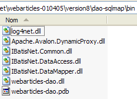 |
2.5.6.8. NUnit-Tests für die [dao]-Schicht
2.5.6.8.1. Die NUnit-Testklasse
Die NUnit-Testklasse für die Implementierungsklasse [ArticlesDaoSqlMap] ist dieselbe wie die für die Klasse [ArticlesDaoPlainODBC] (siehe Abschnitt 2.3.3.2). Wir verfolgen einen ähnlichen Ansatz, um den NUnit-Test für die Klasse [ArticlesDaoSqlMap] vorzubereiten:
- Wir erstellen den Ordner [test1] (rechts) im Visual Studio-Ordner des Projekts [dao-sqlmap], indem wir den Ordner [tests] aus dem Projekt [dao-odbc] (links) kopieren:
| 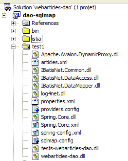 |
- Im Ordner [tests] ersetzen wir die DLL [webarticles-dao.dll] durch die aus dem Projekt [dao-sqlmap] generierte DLL [webarticles-dao.dll].
- Wir fügen die von SqlMap benötigten DLLs sowie die besprochenen Konfigurationsdateien [providers.config, sqlmap.config, properties.xml, articles.xml] hinzu.
- Wir ändern die Konfigurationsdatei [spring-config.xml], um die neue Klasse [ArticlesDaoSqlMap] zu instanziieren:
Kommentare:
- Zeile 7: Das Objekt [articlesdao] ist nun mit einer Instanz der Klasse [ArticlesDaoSqlMap] verknüpft
- Diese Klasse hat keinen Konstruktor. Es wird der Standardkonstruktor verwendet.
2.5.6.8.2. Tests
Die Tabelle [ARTICLES] in der Firebird-Datenquelle ist mit den folgenden Artikeln gefüllt:

Wir sind bereit für den Test. Mit der Anwendung [Nunit-Gui] laden wir die DLL [test-webarticles-dao.dll] aus dem oben genannten Ordner [test1] und führen den Test [testGetAllArticles] aus:

Trotz des Namens [NUnitTestArticlesDaoArrayList], der der Testklasse ursprünglich gegeben wurde, ist es tatsächlich die Klasse [ArticlesDaoSqlMap], die hier getestet wird. Der Screenshot zeigt, dass wir die Artikel, die wir in die Tabelle [ARTICLES] eingefügt haben, korrekt abgerufen haben. Führen wir nun alle Tests aus:

Leser, die dieses Dokument auf dem Bildschirm betrachten, werden sehen, dass einige Tests bestanden haben (grün), andere jedoch fehlgeschlagen sind (rot). Die Tests, die fehlgeschlagen sind, sind [testArticleAbsent] und [testChangerStockArticle]. Nach eingehender Untersuchung scheint es, dass die Ursachen für diese Fehler wie folgt sind:
- In [testArticleAbsent] versuchen wir, einen Artikel zu ändern, der nicht existiert. Dazu verwenden wir die Methode [modifieArticle], die die Anzahl der geänderten Zeilen als 0 oder 1 zurückgibt. Hier sollten wir 0 erhalten. Stattdessen erhalten wir eine Ausnahme vom Typ [IBatisNet.Common.Exceptions.ConcurrentException].
- In [changerStockArticle] gibt es eine weitere Operation vom Typ [update]. Dabei wird der Lagerbestand um eine Menge verringert, die größer ist als der aktuelle Lagerbestand. Dazu wird die Methode [changerStockArticle] verwendet, die die Anzahl der geänderten Zeilen als 0 oder 1 zurückgibt. Der SQL-Befehl wurde so geschrieben, dass eine Aktualisierung verhindert wird (siehe den SQL-Befehl „changerStockArticle“ in articles.xml), die zu einem negativen Lagerbestand führen würde. Hier erwarten wir als Ergebnis der Methode [changerStockArticle] den Wert 0. Auch hier erhalten wir eine Ausnahme vom Typ [IBatisNet.Common.Exceptions.ConcurrentException].
Es gibt viele mögliche Fehlerquellen:
- Der Code in der Klasse [ArticlesDaoSqlMap] ist fehlerhaft. Dies ist möglich. Er stammt jedoch aus einer Portierung einer Java-Klasse, die mit der Java-Version von SqlMap korrekt funktioniert hatte.
- Die .NET-Version von SqlMap ist fehlerhaft
- Der Firebird-ODBC-Treiber ist fehlerhaft
- ...
Da keine Gewissheit besteht, werden wir das Problem umgehen, indem wir die [IBatisNet.Common.Exceptions.ConcurrentException] abfangen. Der neue Code für die Klasse [ArticlesDaoSqlMap] lautet wie folgt:
Die Änderungen befinden sich in den Zeilen: 28, 41, 69. Bei SQL-Operationen vom Typ [UPDATE, DELETE] wird, falls eine Ausnahme vom Typ [IBatisNet.Common.Exceptions.ConcurrentException] auftritt, 0 als Ergebnis zurückgegeben, was anzeigt, dass keine Zeilen geändert oder gelöscht wurden. Anschließend wird die DLL des Projekts neu generiert, im Ordner [test1] abgelegt und die NUnit-Tests werden erneut ausgeführt:

Diesmal funktioniert es. Wir werden nun mit dieser DLL arbeiten.
2.5.6.9. Integration der neuen [dao]-Schicht in die [webarticles]-Anwendung
2.5.6.9.1. ODBC-Datenquelle
Hier testen wir die in Abschnitt 2.3.3.1 beschriebene ODBC-Datenquelle. Sie wird hier über SqlMap verwendet.
Wir folgen der in Abschnitt 2.3.4 beschriebenen Vorgehensweise. Wir nehmen folgende Änderungen am Inhalt des Ordners [runtime] vor:
- Im Ordner [bin] wird die DLL für die alte [dao]-Schicht durch die DLL für die neue [dao]-Schicht ersetzt, die von der Klasse [ArticlesDaoSqlMap] implementiert wird. Wir fügen die für Firebird und SqlMap erforderlichen DLLs hinzu:

- In [runtime] legen wir die SqlMap-Konfigurationsdateien [providers.config, sqlmap.config, properties.xml, articles.xml] ab:

- In [runtime] wird die Konfigurationsdatei [web.config] durch eine Datei ersetzt, die die neue Implementierungsklasse berücksichtigt:
Kommentare:
- In Zeile 14 wird das Singleton [articlesDao] mit einer Instanz der neuen Klasse [ArticlesDaoSqlMap] verknüpft. Dies ist die einzige Änderung.
Wir sind bereit, die Tests auszuführen. Wir konfigurieren den [Cassini]-Webserver wie in den vorherigen Tests. Wir füllen die Tabelle „articles“ mit den folgenden Werten:

Über einen Browser rufen wir die URL [http://localhost/webarticles/main.aspx] auf:

 |
Sehen wir uns nun den Inhalt der Tabelle [ARTICLES] an:

Die Artikel [Messer] und [Löffel] wurden gekauft, und ihre Lagerbestände wurden um die gekaufte Menge reduziert. Der Artikel [Gabel] konnte nicht gekauft werden, da die angeforderte Menge den Lagerbestand überstieg. Wir laden den Leser ein, weitere Tests durchzuführen.
2.5.6.9.2. MSDE-Datenquelle
Hier testen wir die in Abschnitt 2.4.3.1 besprochene MSDE-Datenquelle. Sie wird hier über SqlMap verwendet. Wir gehen genauso vor wie zuvor. Wir nehmen folgende Änderungen am Inhalt des Ordners [runtime] vor:
- Der Inhalt des Ordners [bin] bleibt unverändert
- In [runtime] ändern sich die SqlMap-Konfigurationsdateien [providers.config, properties.xml]. Die Konfigurationsdateien [sqlmap.config, articles.xml] bleiben unverändert.
- Die Datei [providers.config] konfiguriert einen neuen <provider>:
<?xml version="1.0" encoding="utf-8" ?>
<providers>
<clear/>
<provider
name="sqlServer1.1"
assemblyName="System.Data, Version=1.0.5000.0, Culture=neutral, PublicKeyToken=b77a5c561934e089"
connectionClass="System.Data.SqlClient.SqlConnection"
commandClass="System.Data.SqlClient.SqlCommand"
parameterClass="System.Data.SqlClient.SqlParameter"
parameterDbTypeClass="System.Data.SqlDbType"
parameterDbTypeProperty="SqlDbType"
dataAdapterClass="System.Data.SqlClient.SqlDataAdapter"
commandBuilderClass="System.Data.SqlClient.SqlCommandBuilder"
usePositionalParameters = "false"
useParameterPrefixInSql = "true"
useParameterPrefixInParameter = "true"
parameterPrefix="@"
/>
</providers>
Dieser <provider> nutzt die .NET-Klassen für den Zugriff auf SQL Server-Datenquellen. Er ist standardmäßig in der mit SqlMap bereitgestellten Vorlagendatei [providers.config] enthalten.
- Die Datei [properties.xml] definiert den <provider> für die MSDE-Quelle sowie deren Verbindungszeichenfolge:
<?xml version="1.0" encoding="utf-8" ?>
<settings>
<add key="provider" value="sqlServer1.1" />
<add
key="connectionString"
value="Data Source=portable1_tahe\msde140405;Initial Catalog=dbarticles;UID=admarticles;PASSWORD=mdparticles;"/>
</settings>
- In [runtime] bleibt die Konfigurationsdatei [web.config] unverändert.
Wir sind bereit für den Test. Der [Cassini]-Webserver behält seine übliche Konfiguration bei. Wir initialisieren die Tabelle „articles“ in der MSDE-Quelle mit [EMS MS SQL Manager]:
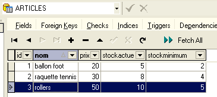
Über einen Browser rufen wir die URL [http://localhost/webarticles/main.aspx] auf:

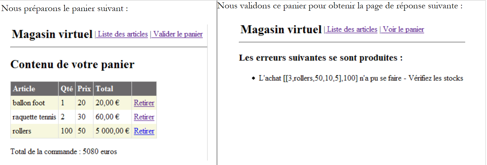 |
Sehen wir uns nun den Inhalt der Tabelle [ARTICLES] mit [EMS MS SQL Manager] an:

Die Artikel [Fußball] und [Tennisschläger] wurden gekauft, und ihre Lagerbestände wurden um die gekaufte Menge reduziert. Der Artikel [Rollschuhe] konnte nicht gekauft werden, da die angeforderte Menge den Lagerbestand überstieg. Wir laden den Leser ein, weitere Tests durchzuführen.
2.5.6.9.3. OleDb-Datenquelle
Hier testen wir die in Abschnitt 2.4.5.1 vorgestellte ACCESS-Datenquelle. Sie wird hier über SqlMap verwendet. Wir gehen genauso vor wie zuvor. Wir nehmen folgende Änderungen am Inhalt des Ordners [runtime] vor:
- Der Inhalt des Ordners [bin] bleibt unverändert
- In [runtime] ändern sich die SqlMap-Konfigurationsdateien [providers.config, properties.xml]. Die Konfigurationsdateien [sqlmap.config, articles.xml] bleiben unverändert.
- Die Datei [providers.config] konfiguriert einen neuen <provider>:
<?xml version="1.0" encoding="utf-8" ?>
<providers>
<clear/>
<provider
name="OleDb1.1"
enabled="true"
assemblyName="System.Data, Version=1.0.5000.0, Culture=neutral, PublicKeyToken=b77a5c561934e089"
connectionClass="System.Data.OleDb.OleDbConnection"
commandClass="System.Data.OleDb.OleDbCommand"
parameterClass="System.Data.OleDb.OleDbParameter"
parameterDbTypeClass="System.Data.OleDb.OleDbType"
parameterDbTypeProperty="OleDbType"
dataAdapterClass="System.Data.OleDb.OleDbDataAdapter"
commandBuilderClass="System.Data.OleDb.OleDbCommandBuilder"
usePositionalParameters = "true"
useParameterPrefixInSql = "false"
useParameterPrefixInParameter = "false"
parameterPrefix = ""
/>
</providers>
Dieser <provider> verwendet die .NET-Klassen für den Zugriff auf OleDb-Datenquellen. Er ist standardmäßig in der mit SqlMap verteilten Vorlagendatei [providers.config] enthalten.
- Die Datei [properties.xml] definiert den OleDb-Quellen-<provider> und dessen Verbindungszeichenfolge:
<?xml version="1.0" encoding="utf-8" ?>
<settings>
<add key="provider" value="OleDb1.1" />
<add
key="connectionString"
value="Provider=Microsoft.Jet.OLEDB.4.0;Data Source=D:\data\serge\databases\access\articles\articles.mdb;"/>
</settings>
- In [runtime] bleibt die Konfigurationsdatei [web.config] unverändert.
Wir sind bereit für den Test. Der [Cassini]-Webserver behält seine übliche Konfiguration bei. Wir initialisieren die Tabelle „articles“ aus der ACCESS-Quelle wie folgt:

Über einen Browser rufen wir die URL [http://localhost/webarticles/main.aspx] auf:
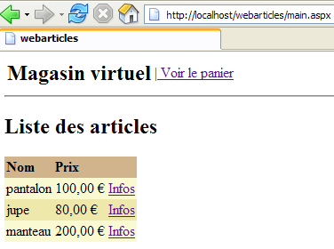
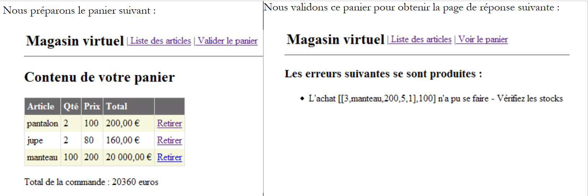 |
Sehen wir uns nun den Inhalt der Tabelle [ARTICLES] mit folgendem Befehl an:

Die Artikel [pants] und [skirt] wurden gekauft, und ihre Lagerbestände wurden um die gekaufte Menge reduziert. Der Artikel [coat] konnte nicht gekauft werden, da die angeforderte Menge den Lagerbestand überstieg. Wir laden den Leser ein, weitere Tests durchzuführen.
2.5.7. Fazit
Wir beenden diesen langen Tutorial-Artikel an dieser Stelle. Was haben wir erreicht?
- Wir haben die [DAO]-Schicht einer dreischichtigen Webanwendung auf vier verschiedene Arten implementiert:
- unter Verwendung von .NET-Zugriffsklassen für ODBC-Quellen
- unter Verwendung von .NET-Zugriffsklassen für SQL Server-Quellen
- unter Verwendung von .NET-Zugriffsklassen für OleDb-Quellen
- unter Verwendung von Zugriffsklassen von Drittanbietern für den Zugriff auf eine Firebird-Datenbank
- Jedes Mal haben wir die neue [DAO]-Schicht in die dreischichtige [webarticles]-Anwendung [Web, Domäne, DAO] integriert, ohne die [Web-] oder [Domänen-]Schichten neu zu kompilieren
- Schließlich führten wir das [SqlMap]-Tool ein, mit dem wir eine [DAO]-Schicht erstellen konnten, die sich transparent zum Code an verschiedene Datenquellen anpassen lässt. So konnten wir mit dieser neuen Schicht die Datenquellen aus den vorherigen Implementierungen 1 bis 3 nacheinander nutzen. Dies erfolgte transparent über Konfigurationsdateien.
- Wir haben die große Flexibilität demonstriert, die die Tools Spring und SqlMap für dreischichtige Webanwendungen bieten.